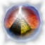
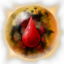
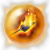
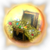
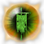
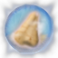
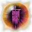

Filters:
Amber Flask
Lesser Artifact
15 Piercing Damage
12% Pierce Resistance
12% Poison Resistance
+30 Defensive Ability
+12% Attack Speed
Completion Bonuses :
+10% Pierce Damage12,50%
+10% Attack Speed12,50%
+25 Defensive Ability12,50%
8% Elemental Resistance12,50%
+8% Movement Speed12,50%
5 - 10 Damage12,50%
5 - 10 Piercing Damage12,50%
10 Damage
+10% Physical Damage
+5% Movement Speed12,50%
Required Reagents :
Essence of Artemis' Bowstring
Pristine Plumage
Turtle Shell
LVL 10
Amhose's Cenotaph

Greater Artifact
100 Poison Damage over 3.0 Seconds
25 Vitality Damage
+12% Armor Protection
40% Poison Resistance
+10% Movement Speed
+20% Casting Speed
Grants Skill : Deterioration (Activated when equipped)
As enemies are approchaing, they can feel the essence of death slowly taking hold of their body, and you've learned to feed off of their despair.
3 Active Energy Cost per Second
4.0 Meter Radius
70 Damage
70 Vitality Damage
33% of Attack damage converted to Health
Completion Bonuses :
+35% Poison Damage16,67%
+25% Vitality Damage16,67%
+25% Vitality Decay16,67%
120 Vitality Decay Retaliation over 3.0 Seconds16,67%
+450 Health16,67%
+30% Damage to Undeads
+30% Damage to Ghosts16,67%
Required Reagents :
Maiden's Kiss
Spirit Blight
Legendary Pharaonic Wrappings
LVL 45
Apples of Idun
Divine Artifact
100% Vitality Damage Resistance
+10.0 Health Regeneration per second
+50% Health Regeneration
+10.0 Energy Regeneration per second
+50% Energy Regeneration
+1 to all skills in Lifegiving Mastery
Grants Skill : Restoration (Activated on low health)
Instantly replenishes an extensive amount of health.
10.0 Second(s) Recharge
0.5 Second Duration
5000 Health Restored
Completion Bonuses :
+100 Defensive Ability15,09%
21% Elemental Resistance15,09%
-10% Energy Cost15,09%
40% Energy Leech Resistance
50% Stun Resistance
+3.0 Health Regeneration per second15,09%
+450 Health15,09%
Bonus to all pets:
15% of Attack damage converted to Health
+15% Todal Damage15,09%
-10% Recharge9,43%
Required Reagents :
Memento of Hope
Arcane Mirror
Sphere of Eternity
LVL 60
Arcane Mirror
Greater Artifact
100% Life Leech Resistance
100% Energy Leech Resistance
15.0% Chance of 100% Damage Reflected
+50% Energy Regeneration
10% Chance to Avoid Projectiles
-10% Strength Requirement for Armor
Grants Skill : Mirror Wall (Activated upon taking damage)
A protective barrier appears around the player, reflecting enemies' spells back at them for a duration.
90.0 Second(s) Recharge
12.0 Second Duration
300% Damage Reflected
Completion Bonuses :
11% Armor Protection
+35 Defensive Ability13,26%
18% Elemental Resistance13,26%
30% Energy Leech Resistance
40% Stun Resistance
+2.0 Health Regeneration per second 13,26%
+8.0 Health Regeneration per second
+65% Health Regeneration13,26%
20.0% Chance of 90 Life L. Ret. over 3.0 Secs.13,26%
35% Pierce Resistance13,26%
+10% Total Speed13,26%
24% Damage Reflected7,18%
Required Reagents :
Silver Heart
Phylactery of Shadows
Incarnation of Archimedes' Mirror
LVL 45
Blood Gem
Greater Artifact
+20% Pierce Damage
40 Piercing Damage
33.0% Chance of 100 Piercing Retaliation
+10% Movement Speed
+20% Attack Speed
+1 to all skills in Archery Mastery
Grants Skill : Blood Boil (Activated on low health)
Makes the blood boil within the veins of all nearby oppponents, wounding them and magically replenishing the player's own life at the same time.
120.0 Second(s) Recharge
6.0 Meter Radius
426 Bleeding Damage over 2.0 Seconds
250 - 320 Vitality Damage
100% of Attack damage converted to Health
Completion Bonuses :
90 Bleeding Damage over 3.0 Seconds13,14%
35% Bleeding Resistance13,14%
+33 Dexterity13,14%
+315 Health13,14%
96 Life Leech over 3.0 Seconds13,14%
+16% Movement Speed13,14%
44.0% Chance of 38 - 90 Piercing Retaliation13,14%
+20% Pierce Damage8,00%
Required Reagents :
Razor Claw
Emerald Quill
Cinderbolt
LVL 40
Blood of Ares
Divine Artifact
25 Damage
+50% Bleeding Damage with +50% Improved Duration
100% Bleeding Resistance
+55 Offensive Ability
+15% Attack Speed
Grants Skill : Tears of Blood (Activated upon taking damage)
Bloodfire tears of the good Ares rain down upon the Earth, causing bleeding and fire damage on all who are struck.
90.0 Second(s) Recharge
8.0 Second Duration
8.0 Meter Radius
350 Bleeding Damage per Second
176 - 198 Burn Damage over 2.0 Seconds
Completion Bonuses :
+25% Physical Damage15,31%
+30% Attack Speed15,31%
120 Bleeding Damage over 3.0 Seconds15,31%
111 Energy Leech over 3.0 Seconds15,31%
20.0% Chance of 160 Life L. Ret. over 3.0 Secs.15,31%
202 Reduced Armor for 3.0 Seconds15,31%
+50% Physical Retaliation
120 Bleeding Dmg. Ret. over 3.0 Seconds
+50% Bleeding Retaliation
25% Reduction in Bleeding Duration8,16%
Required Reagents :
Lionheart
Fury of the Ages
Embodiment of the Valor of Achilles
LVL 50
Bloodrage

Lesser Artifact
24 Damage
72 Bleeding Damage over 3.0 Seconds
+22% Bleeding Damage
25% Bleeding Resistance
8% Chance to Dodge Attacks
Completion Bonuses :
+8% Armor Protection
+25 Defensive Ability12,50%
25% Bleeding Resistance12,50%
45 Bleeding Damage over 3.0 Seconds12,50%
42 Energy Leech over 3.0 Seconds12,50%
+18 Dexterity12,50%
20.0% Chance of 60 Life L. Ret. over 3.0 Secs.12,50%
+6.0 Health Regeneration per second
+50% Health Regeneration12,50%
Required Reagents :
Essence of Guan-Yu's Grace
Peng Claw
Scroll of the Cyclops
LVL 25
Book of Dreams
Greater Artifact
+25% Lightning Damage
+25% Electrical Burn Damage with +25% Improved Duration
10% Physical Resistance
100% Sleep Resistance
50% Stun Resistance
+100% Health Regeneration
+6.0 Energy Regeneration per second
+1 to all skills in Time Mastery
Completion Bonuses :
+20% Fire Damage13,19%
+20% Cold Damage13,19%
+20% Lightning Damage13,19%
+20% Casting Speed13,19%
10 - 15 Lightning Damage13,19%
50% Slower Attack for 3.0 Seconds13,19%
Bonus to All Pets:
25 Elemental Damage
+15% Elemental Damages
+10% Casting Speed13,19%
+8% Total Speed7,69%
Required Reagents :
Scroll of Oneiros
Shroud of Eternal Night
Scroll of the Sky's Rage
LVL 25
Bottled Apocalypse
Greater Artifact
+15% Fire Damage
+15% Lightning Damage
+15% Vitality Damage
15 Fire Retaliation
15 Lightning Retaliation
15 Vitality Retaliation
-15 Strength
+60 Intelligence
-15 Dexterity
Grants Skill : Storm Cloak (Activated on low health)
Upon taking severe damage, the Bottled Apocalypse breaks, forming a thunderous cloak around you, and temporarily increasing your elemental powers.
30.0 Second(s) Recharge
10.0 Second Duration
25 Fire Damage
25 Lightning Damage
25 Vitality Damage
+150% Fire Retaliation
+150% Lightning Retaliation
+150% Vitality Damage Retaliation
25% Elemental Resistance
Completion Bonuses :
+5% Intelligence13,04%
10 - 15 Fire Damage13,04%
36 Life Leech over 3.0 Seconds13,04%
+20% Casting Speed13,04%
30 Burn Retaliation over 3.0 Seconds13,04%
+20% Fire Damage13,04%
5.0% Chance of 2.0 Second(s) of Stun13,04%
-8% Recharge8,69%
Required Reagents :
Winterflame
Crystal Tear
Formicid Eggs
LVL 25
Brôma Theôn
Lesser Artifact
15% Reduction in Poison Duration
50% Vitality Damage Resistance
+15% Health
-15% Intelligence Requirement for all Weapons
+2 to Gift of Life
+2 to Nature Familiarity
Bonus to All Pets:
+15% Health
+30% Health Regeneration
Completion Bonuses :
25% Bleeding Resistance14,28%
13% Elemental Resistance14,28%
+170 Energy14,28%
6% of Attack Damage converted to Health14,28%
+6.0 Health Regeneration per second
+50% Health Regeneration13,09%
+40% Damage to Magical
+10% Less Damage from Magical11,9%
30% Stun Resistance
20% Energy Leech Resistance
+1.0 Health Regeneration per second10,71%
Bonus to All Pets:
+150 Health
+10% Total Speed7,14%
Required Reagents :
Essence of the Children of Okeanos
Membrane Wings
Scroll of Creeping Death
LVL 25
Carnyx
Lesser Artifact
5.0% Chance of 2.0 second(s) of Stun
5.0% Chance of 3.0 second(s) of Fear
40 Armor
+10% Shield Block Chance
+300 Health
-10% Shield Recovery Time
+2 to Shield Expertise
+2 to Bedrock
Bonus to All Pets:
5.0% Chance of 1.0 second(s) of Stun
20 Armor
+60 Health
Completion Bonuses :
10 - 24 Damage23,08%
55% Slower Attack Over 3.0 Seconds19,23%
+45 Offensive Ability11,54%
+33 Strength11,54%
+15 Attack Speed11,54%
+25% Physical Damage11,54%
20% Reduced Damage over 3.0 Seconds
202 Reduced Armor over 3.0 Seconds11,54%
Required Reagents :
Human Blood
Essence of Epona's Horses
Scroll of Primal Chaos
LVL 30
Chaos Cube
Lesser Artifact
39 Poison Damage over 3.0 Seconds
39 Vitality Decay over 3.0 Seconds
7% Physical Resistance
15% Vitality Damage Resistance
+100 Health
Completion Bonuses :
15% Poison Resistance12,50%
15% Bleeding Resistance12,50%
+10% Poison Damage12,50%
+10% Vitality Damage12,50%
+95 Health12,50%
+95 Energy12,50%
24 Energy Leech over 3.0 Seconds12,50%
+4.0 Health Regeneration per second
+35% Health Regeneration12,50%
Required Reagents :
Essence of Dionysus' Wineskin
Venom Sac
Demon's Blood
LVL 15
Cinderbolt

Lesser Artifact
+20% Fire Damage
+20% Burn Damage
25% Pierce Resistance
+20 Dexterity
+75 Health
+75 Energy
Completion Bonuses :
+5% Intelligence12,50%
+15% Physical Damage12,50%
30 Burn Retaliation over 3.0 Seconds12,50%
+20% Casting Speed12,50%
30% Fire Resistance12,50%
+200 Health12,50%
54 Reduced Armor over 3.0 Seconds12,50%
Bonus to All Pets:
25 Elemental Damage
+15% Elemental Damages
+10% Casting Speed12,50%
Required Reagents :
Essence of Amun-Ra's Glory
Hag's Skin
Rigid Carapace
LVL 20
Conqueror's Mark
Greater Artifact
150 Bleeding Damage over 3.0 Seconds
10.0% Chance of 80% Physical Resistance
50% Bleeding Resistance
60% Skill Disruption Protection
10% Chance to Dodge Attacks
Bonus to All Pets:
60 Bleeding Damage over 3.0 Seconds
+200 Health
+10% Total Speed
Completion Bonuses :
+25% Bleeding Damage12,50%
+25% Attack Speed12,50%
30% Energy Leech Resistance
40% Stun Resistance
+2.0 Health Regeneration per second12,50%
20 - 25 Damage12,50%
35% Pierce Resistance12,50%
+33 Strength12,50%
35% Vitality Damage Resistance12,50%
Bonus to All Pets:
45 Damage
+20% Physical Damage
+12% Movement Speed12,50%
Required Reagents :
Ebony Globe
Jade Idol
Legendary Turtle Shell
LVL 45
Crescent Moon of Artemis
Divine Artifact
+50% Pierce Damage
33.0% Cahcne of 100 Piercing Retaliation
+18% Defensive Ability
+5% Total Speed
+30% Damage to Demons
+20% Less Damage from Demons
Grants Skill : Artemis' Battle Dance (Activated upon taking damage)
Move with divine grace for a short duration, becoming almost impossible to hit.
90.0 Second(s) Recharge
15.0 Second Duration
+80% Movement Speed
75% Chance to Dodge Attacks
75% Chance to Avoid Projectiles
Completion Bonuses :
+30% Attack Speed15,31%
+48 Dexterity15,31%
30 - 35 Piercing Damage15,31%
35% Pierce Resistance15,31%
35% Vitality Damage Resistance15,31%
Bonus to All Pets:
65 Piercing Damage
+25% Pierce Damage
+25 Armor15,31%
50% Increase in Projectile Speed
+50% Pierce Damage Retaliation
33.0% Ch. of 40% Slw. Atk. Ret. over 3.0 Secs.
+10% Movement Speed8,16%
Required Reagents :
Fury of the Ages
Blood Gem
Greater Scroll of Vengeance
LVL 50
Crimson Viper
Greater Artifact
+25% Instant Poison Damage
+25% Poison Damage
25 - 35 Instant Poison Damage
50% Poison Resistance
+1 to all skills in Science Mastery
Grants Skill : Serpent's Fang (Activated upon taking damage)
Poisoned darts fire outward from the player in all directions.
60.0 Second(s) Recharge
12 Projectile(s)
200 Bleeding Damage over 2.0 Seconds
200 Poison Damage over 2.0 Seconds
200 - 210 Piercing Damage
Bonus to All Pets:
+15% Pierce Damage
+15% Lightning Damage
Completion Bonuses :
+250 Energy15,29%
+33 Intelligence15,29%
90 Posion Damage over 3.0 Seconds15,29%
Bonus to All Pets:
45 Piercing Damage
+20% Pierce Damage
+20 Armor15,29%
Bonus to All Pets:
45 Instant Poison Damage
+20% Instant Poison Damage
+150 Health15,29%
+65 Defensive Ability14,28%
Bonus to All Pets:
+200 Health
+12% Total Speed8,28%
Required Reagents :
Shroud of Eternal Night
Raven's Shadow
Epic Peng Claw
LVL 40
Crosier of Osiris
Divine Artifact
+35% Vitality Decay
+25% Life Leech
50 Energy Leech over 2.0 Seconds
25% Vitality Damage Resistance
25% Energy Leech Resistance
40% less Energy Reserved
+1 to all skills in Necromancy Mastery
+30% Damage to Undead
+100 Less Damage to Undead
Grants Skill : Soul Drain
Completion Bonuses :
+25% Vitality Damage15,31%
45% Cold Resistance15,31%
+350 Energy15,31%
120 Frostburn Retaliation over 3.0 Seconds15,31%
147 Life Leech over 3.0 Seconds15,31%
120 Vitality Decay over 3.0 Seconds15,31%
Bonus to All Pets:
+10% Attack Speed
+15% Casting Speed8,16%
Required Reagents :
Nose of the Sphinx
Final Breath
Epic Spectral Matter
LVL 50
Crystal of Hope

Lesser Artifact
20 - 30 Cold Damage
5.0% Chance of 2.0 - 5.0 second(s) of Freeze
+15% Armor Protection
40% Cold Resistance
40% Poison Resistance
+325 Health
+35% Health Regeneration
Completion Bonuses :
45% Cold Resistance20%
+65 Defensive Ability20%
+33 Dexterity20%
+33 Intelligence20%
+20% Armor Protection10%
+30% Cold Damage10%
Required Reagents :
Legendary Pristine Plumage
Incarnation of Hermes' Sandal
Incarnation of the Aegis of Athena
LVL 45
Crystal Tear
Lesser Artifact
+18% Cold Damage
+18% Frostburn Damage
+18% Vitality Damage
+18% Vitality Decay
5.0% Chance of 1.0 - 3.0 second(s) of Freeze
15% Cold Resistance
15% Vitality Damage Resistance
+5% Total Speed
+2 to Absolute Zero
Completion Bonuses :
+20% Casting Speed11,11%
10 - 15 Cold Damage11,11%
13% Elemental Resistance11,11%
+170 Energy11,11%
30 Frostburn Retaliation over 3.0 Seconds11,11%
+200 Health11,11%
36 Life Leech over 3.0 Seconds11,11%
45 Vitality Decay over 3.0 Seconds11,11%
+40% Damage to Undead
+10% Less Damage from Undead11,11%
Required Reagents :
Essence of the Jade Emperor's Serenity
Saber Claw
Yeti Fur
LVL 25
Dark Core
Lesser Artifact
+20% Pierce Damage
+20% Lightning Damage
18 - 55 Lightning Damage
30% Pierce Resistance
+15% Intelligence
+10% Energy
+2 to Ingenuity
+2 to Atomic Burst
Completion Bonuses :
45 Poison Damage over 3.0 Seconds12,50%
10 - 15 Lightning Damage12,50%
30% Fire Resistance12,50%
30% Lightning Resistance12,50%
+170 Energy12,50%
20% Energy Leech Resistance
30% Stun Resistance
+1.0 Health Regeneration per second12,50%
Bonus to All Pets:
25 Piercing Damage
+15% Pierce Damage
15 Armor12,50%
Bonus to All Pets:
25 Instant Poison Damage
+15% Instant Poison Damage
+100 Health12,50%
Required Reagents :
Embodiment of Zeus' Thunderbolt
Epic Rigid Carapace
Greater Scroll of Frenzy
LVL 35
Dark Knight's Revenge
Lesser Artifact
10 - 16 Damage
10.0% Chance of 3.0 - 5.0 second(s) of Fear
+225 Health
+65 Offensive Ability
+20% Attack Speed
Completion Bonuses :
16 Piercing Damage15,18%
+30 Offensive Ability15,18%
-10% Strength Requirement to all Weapons
-10% Dexterity Requirement to all Weapons15,18%
+15% Physical Damage15,18%
20.0% Chance of 168 Bleeding Damage over
3.0 Seconds15,18%
15.0% chance of 10 Reduced Resistances for
3.0 Seconds15,18%
5 Damage
5 Piercing Damage
5 Vitality Damage
5% Reduction to Enemy's Health8,8%
Required Reagents :
Epic Fury's Heartblood
Embodiement of the Blade of Thanatos
Greater Scroll of Vengeance
LVL 35
Deathrattle
Lesser Artifact
10 Damage
30 Poison Damage over 3.0 Seconds
+30 Health
+30 Energy
+15% Attack Speed
Completion Bonuses :
+8% Attack Speed27,69%
4 - 6 Piercing Damage27,69%
+11 Dexterity9,23%
4 - 6 Damage8,46%
9 - 18 Poison Damage over 3.0 Seconds8,46%
12% Reduced Damage for 3.0 Seconds
33% Slower Attack for 3.0 Seconds6,92%
5 - 9 Damage0,77%
12 - 24 Poison Damage over 3.0 Seconds0,77%
14% Reduced Damage for 3.0 Seconds
44% Slower Attack for 3.0 Seconds0,77%
Required Reagents :
Essence of the Valor of Achilles
Bat Fang
Scroll of Unbroken Fortitude
LVL 5
Demeter's Bounty
Divine Artifact
80% Poison Resistance
+120% Health Regeneration
+150 Energy
-25% Energy Cost
+75 Less Damage from Beasts
+75 Less Damage from Beastmen
Grants Skill : Demeter's Bounty (Activated upon taking damage)
Quickly restores the player to full health and energy.
120.0 Second(s) Recharge
15.0 Second Duration
7.0 Meter Radius
+50.0 Health Regeneration per second
+400% Health Regeneration
+50.0 Energy Regeneration per second
+400% Energy Regeneration
Completion Bonuses :
+15% Intelligence15,31%
35% Bleeding Resistance15,31%
21% Elemental Resistance15,31%
45% Fire Resistance15,31%
+10.0 Health Regeneration per second
+80% Health Regeneration15,31%
45% Lightning Resistance15,31%
-12% Reduction to all Requirements
+75 Less Damage from Undead
+75 Less Damage from Insectoids8,16%
Required Reagents :
The Three Axes
Hand of Gaia
Epic Viny Growth
LVL 50
Dice of Fate
Greater Artifact
+5% Total Damage
Chance for one of the following :
50 Damage
50 Elemental Damage
50 Instant Poison Damage
50 Vitality Damage
1.0 second(s) of Stun
Chance for one of the following :
50 Physical Retaliation
50 Elemental Retaliation
50 Instant Poison Retaliation
50 Vitality Retaliation
1.0 Stun Retaliation
Completion Bonuses :
5.0% Chance of +100% Physical Damage14,28%
5.0% Chance of 120 Piercing Damage14,28%
5.0% Chance of 100% Energy Drain
(100% of lost energy as damage)14,28%
5.0% Chance of +80% Armor Protection14,28%
5.0% Chance of 300 Physical Retaliation14,28%
5.0% Chance of -100% Energy Cost14,28%
5.0% Chance of -80% Recharge14,28%
Required Reagents :
Dark Knight's Revenge
Nexus of Insanity
Embodiement of Monkey King's Trickery
LVL 40
Dragontongue
Greater Artifact
180 Burn Damage over 6.0 Seconds
+25% Fire Damage
+25% Burn Damage with +25% Improved Duration
85 Reduced Armor for 6.0 Seconds
+26 Intelligence
+35 Defensive Ability
+1 to all skills in Witchcraft Mastery
Completion Bonuses :
+5% Intelligence12,50%
30% Cold Resistance12,50%
+170 Energy12,50%
42 Energy Leech over 3.0 Seconds12,50%
30 Fire Damage12,50%
30% Fire Resistance12,50%
+200 Health12,50%
25% Vitality Damage Resistance12,50%
Required Reagents :
Star Heart
Earthen Talisman
Greater Scroll of Vampirism
LVL 35
Druidic Wreath
Greater Artifact
40% Poison Resistance
+100 Energy
+50% Health Regeneration
+12% Offensive Ability
-10% Shield Recovery Time
+1 to all skills in Lifegiving Mastery
Completion Bonuses :
+8% Armor Protection
+25 Defensive Ability12,50%
+20% Casting Speed12,50%
30% Cold Resistance12,50%
30% Fire Resistance12,50%
+200 Health12,50%
+18 Intelligence12,50%
30% Lightning Resistance12,50%
Bonus to All Pets:
25 Damage
+15% Physical Damage
+8% Movement Speed12,50%
Required Reagents :
Leafsong
Crystal Tear
Viny Growth
LVL 25
Earthen Talisman
Lesser Artifact
90 Burn Damage over 3.0 Seconds
+18% Fire Damage
+18% Burn Damage
20 Armor
40% Fire Resistance
40% Poison Resistance
+35 Defensive Ability
Completion Bonuses :
30 Burn Retaliation over 3.0 Seconds14,28%
+20% Casting Speed14,28%
30 Electrical Burn Retaliation over 3.0 Seconds14,28%
30 Frostburn Retaliation over 3.0 Seconds14,28%
10 - 15 Damage14,28%
5.0% Chance of 2.0 second(s) of Stun14,28%
40% Damage to Magical
+10% Less Damage from Magical14,28%
Bonus to All Pets:
25 Elemental Damage
+15% Elemental Damages
+10% Casting Speed14,28%
Required Reagents :
Embodiment of Prometheus' Flame
Epic Boar Hide
Epic Pristine Plumage
LVL 35
Ebony Globe
Lesser Artifact
90 Bleeding Damage over 3.0 Seconds
+25% Bleeding Damage with +30% Improved Duration
10.0% Chance of 5.0 second(s) of Skill Disruption
+60 Defensive Ability
+15% Movement Speed
7% Chance to Dodge Attacks
+2 to Ominous Arrows
+2 to Light Armor Specialist
Completion Bonuses :
20 - 25 Piercing Damage13,33%
+33 Intelligence13,33%
96 Life Leech over 3.0 Seconds13,33%
90 Vitality Decay over 3.0 Seconds13,33%
30% Lightning Resistance13,33%
35% Pierce Resistance13,33%
Bonus to All Pets:
45 Piercing Damage
+20% Pierce Damage
20 Armor13,33%
+10% Total Speed6,67%
Required Reagents :
Embodiment of Guan-Yu's Grace
Embodiment of the Rage of Ares
Epic Saber Claw
LVL 40
Effigy of the Panther

Lesser Artifact
+10% Armor Protection
15% Physical Resistance
10% Elemental Resistance
40% Skill Disruption Protection
+15% Attack Speed
-20% Dexterity Requirement for all Weapons
-20% Dexterity Requirement for Armor
Completion Bonuses :
20 - 25 Damage13,27%
20 - 25 Piercing Damage13,27%
90 Bleeding Damage over 3.0 Seconds13,27%
44.0% Chance of 38 - 90 Piercing Retaliation13,27%
+65 Defensive Ability13,27%
+10% Total Speed13,27%
+40% Damage to Beastmen
+10% Less Damage to Beastmen13,27%
18% Elemental Resistance7,08%
Required Reagents :
Incarnation of the Monkey King's Trickery
Legendary Boar Hide
Incarnation of the Cunning of Odysseus
LVL 45
Effigy of Skyfire
Greater Artifact
+15% Lightning Damage
+20% Vitality Damage
15 Lightning Damage
40 Vitality Damage
+20% Intelligence
10% less Energy Reserved
+20% Casting Speed
+1 to all skills in Chaos Mastery
Grants Skill : Lightning Surge (Activated on attack)
Sends forth a barrage of lightning bolts to strike your foes.
90.0 Second(s) Recharge
300 - 550 Lightning Damage
300 - 550 Vitality Damage
15% Slowed for 1.5 Seconds
Completion Bonuses :
25% Bleeding Resistance12,50%
30 Electrical Burn Retaliation over 3.0 Seconds12,50%
+170 Energy12,50%
+315 Health12,50%
36 Life Leech over 3.0 Secodns12,50%
12% Movement Speed12,50%
50% Slower Attack over 3.0 Seconds12,50%
45 Vitality Decay over 3.0 Seconds12,50%
Required Reagents :
Skyfire Pendant
Dark Core
Embodiment of Zeus' Thunderbolt
LVL 35
Elemental Rage
Greater Artifact
+25% Elemental Damages
6% of Attack damage converted to Health
25% Elemental Resistance
30% Absorption of Spell Energy
Grants Skill : Elemental Chaos (Activated upon taking damage)
Raw elemental forces of fire and ice are invoked, colliding with each other in an explosion of terrific power.
120.0 Second(s) Recharge
12.0 Meter Radius
1000 Burn Damage over 2.0 Seconds
1000 Frostburn Damage over 2.0 Seconds
Completion Bonuses :
+10% Intelligence12,50%
+25% Attack Speed12,50%
60 Burn Retaliation over 3.0 Seconds12,50%
18% Elemental Resistance12,50%
42 Energy Leech over 3.0 Seconds12,50%
96 Life Leech over 3.0 Seconds12,50%
+40% Damage to Construct
+10% Less Damage to Construct12,50%
+40% Damage to Magical
+10% Less Damage to Magical12,50%
Required Reagents :
Tongue of Flame
Spirit Blight
Incarnation of Anubis' Wrath
LVL 45
Emerald Quill
Lesser Artifact
+25% Poison Damage
20 Piercing Damage
+18 Dexterity
+20% Attack Speed
Bonus to All Pets:
20 Piercing Damage
+15% Attack Speed
+15% Casting Speed
Completion Bonuses :
25% Bleeding Resistance12,50%
+200 Health12,50%
+12% Movement Speed12,50%
10 - 15 Piercing Damage12,50%
44.0% Chance of 18 - 50 Piercing Retaliation12,50%
45 Poison Damage over 3.0 Seconds12,50%
25% Poison Resistance12,50%
+18 Strength12,50%
Required Reagents :
Embodiment of Artemis' Bowstring
Epic Diseased Plumage
Greater Scroll of the Earthquake
LVL 35
Emperor's Trove

Lesser Artifact
+25% Pierce Damage
48 Life Leech over 3.0 Seconds
+25% Life Leech
25% Pierce Resistance
50% Life Leech Resistance
8% Health Reduction Retaliation
+3.0 Health Regeneration per second
Completion Bonuses :
+450 Health16,67%
+250 Energy16,67%
147 Life Leech over 3.0 Seconds16,67%
45% Fire Resistance16,67%
+16% Attack Speed16,67%
50% Stun Resistance
40% Energy Leech Resistance
+3.0 Health Regeneration per second16,67%
Required Reagents :
Incarnation of Shen-Nong's Dark Medicine
Legendary Lamia Claw
Legendary Mechanized Heart
LVL 45
Eruption
Greater Artifact
+15% Physical Damage
+25% Fire Damage
35 Fire Damage
10 Reduced Resistances for 3.0 Seconds
40% Stun Resistance
80% Reduced Freeze Duration
15% less Energy Reserved
Grants Skill : Eruption (Activated on attack)
Calls a barrage of meteors to strike down all the enemies nearby, dealing massive fire damage and great injuries over time.
60.0 Second(s) Recharge
125 Energy Cost
5.0 Meter Radius
200 - 350 Damage
240 Burn Damage over 10.0 Seconds
200 - 350 Fire Damage
Completion Bonuses :
20 - 25 Fire Damage17,39%
+25% Fire Damage17,39%
60% Fire Resistance17,39%
+33 Intelligence17,39%
+20% Attack Speed17,39%
18% Elemental Resistance13,04%
Required Reagents :
Summoner's Totem
Tongue of Flame
Divine Scroll of Sun's Blessing
LVL 45
Ethereal Veil
Lesser Artifact
+40% increased Pierce Ratio
+15% Pierce Damage
65 Cold Damage
100% Energy Leech Resistance
100% Reduced Entrapment Duration
100% Skill Disruption Protection
+50 Dexterity
-8% Recharge
Completion Bonuses :
+25% Cold Damage13,33%
+20% Pierce Damage13,33%
20 - 25 Cold Damage13,33%
40% Cold Resistance13,33%
35% Pierce Resistance13,33%
35% Poison Resistance13,33%
+33 Strength13,33%
24% Damage Reflected6,67%
Required Reagents :
Incarnation of of the Djed of Osiris
Incarnation of of the Chill of Tartarus
Incarnation of of the Iron Will of Ajax
LVL 45
Eye of Ra
Divine Artifact
+15% Physical Damage
+60% Fire Damage
+60% Burn Damage
80% Fire Resistance
+15% Attack Speed
+15% Casting Speed
+35% Damage to Insectoids
+35% Less Damage to Insectoids
Grants Skill : Eye of Ra (Activated on low health)
Blankets the area around you with scorching flames that hurt only enemies.
120.0 Second(s) Recharge
15.0 Second Duration
6.0 Meter Radius
1000 Burn Damage per Second
Completion Bonuses :
+15% Strength15,09%
9% of Attack damage converted to Health15,09%
+30% Attack Speed15,09%
35 - 40 Fire Damage15,09%
35 - 40 Damage15,09%
+14% Armor Protection
+45 Defensive Ability15,09%
12% Chance of:
450 Burn Damage over 3.0 Seconds
250 Reduced Armor over 3.0 Seconds9,43%
Required Reagents :
Dragontongue
Heart of Earth
Amhose's Cenotaph
LVL 55
Eye of the Heavens
Greater Artifact
+10% Cold Damage
+10% Lightning Damage
+10% Frostburn Damage
+10% Electrical Burn Damage
25% Cold Resistance
25% Lightning Resistance
+15% Energy
+25% Damage to Demons
Grants Skill : Tidal Wave
Completion Bonuses :
10 - 15 Cold Damage13,13%
13% Elemental Resistance13,13%
+170 Energy13,13%
30 Frostburn Retaliation over 3.0 Seconds13,13%
10 - 15 Lightning Damage13,13%
+12% Movement Speed13,13%
+40% Damage to Animal
+10% Less Damage from Animals13,13%
6% Attack damage converted to Health8,10%
Required Reagents :
Skyfire Pendant
Song of the Serpent
Tortured Soul
LVL 30
Final Breath
Greater Artifact
+15% Pierce Damage
+15% Vitality Damage
114 Life Leech over 3.0 Seconds
+15% Life Leech
50% Vitality Damage Resistance
+9% Attack Speed
+1 to all skills in Necromancy Mastery
+20% Damage to Undead
Completion Bonuses :
+10% Intelligence13,11%
20 - 25 Piercing Damage13,11%
90 Vitality Decay over 3.0 Seconds13,11%
+30% Casting Speed13,11%
40% Cold Resistance13,11%
35% Pierce Resistance13,11%
Bonus to All Pets:
45 Piercing Damage
+20% Pierce Damage
20 Armor13,11%
+35% Life Leech8,20%
Required Reagents :
Deathrattle
Phylactery of Shadows
Embodiment of the Djed of Osiris
LVL 40
Foam of Tethys
Divine Artifact
+50% Frostburn Damage
+50% Poison Damage
+50% Life Leech
25% Elemental Resistance
+50% Life Leech Retaliation
+1000 Health
Grants Skill : Primeaval River (Activated upon taking damage)
Cleansing waters surge and wash out attackers, replenishing your life forces with theirs.
6.0 Second(s) Recharge
25 Energy Cost
125 Frostburn Damage per second
125 Poison Damage per second
125 Life Leech per second
Completion Bonuses :
147 Life Leech over 3.0 Seconds11,32%
72 Energy Leech over 3.0 Seconds11,32%
21% Elemental Resistance11,32%
45% Vitality Damage Resistance11,32%
45% Bleeding Resistance11,32%
+450 Health11,32%
+100 Defensive Ability11,32%
20.0% Chance of 160 Life L. Ret. over 3.0 Secs.11,32%
Bonus to All Pets:
+250 Health
+15% Total Speed5,66%
+10% Energy
-10% Recharge3,77%
Required Reagents :
Halo of Eos
Zeal of the Fanatic
Greater Scroll of a Thousand Blades
LVL 50
Fury of the Ages
Greater Artifact
16 - 26 Fire Damage
20% Pierce Resistance
10% Poison Resistance
+5% Shield Block Chance
20.0% Chance of 50 - 65 Fire Retaliation
+12% Attack Speed
10% Chance to Avoid Projectiles
Completion Bonuses :
25% Bleeding Resistance12,50%
10 - 15 Damage12,50%
44.0% Chance of 18 - 50 Piercing Retaliation12,50%
150% Slower Attack over 3.0 Seconds12,50%
+18 Strength12,50%
25% Vitality Damage Resistance12,50%
+6.0 Health Regeneration per second
+50% Health Regeneration12,50%
Completion Bonuses :
25 Damage
+15% Physical Damage
+8% Movement Speed12,50%
Required Reagents :
Amber Flask
Cinderbolt
Essence of the Shade of Hector
LVL 30
Gale Force
Greater Artifact
+15% Pierce Damage
25.0% Chance of 40 Piercing Damage
7% Chance to Avoid Projectiles
30% Increase in Projectile Speed
Grants Skill : Tailwind (Activated on attack)
Grants all nearby allies increased attack and movement speed for a brief duration.
60.0 Second(s) Recharge
15.0 Second Duration
10.0 Meter Radius
+15% Movement Speed
+40% Attack Speed
Completion Bonuses :
10 - 15 Damage18,46%
10 - 15 Piercing Damage18,46%
24 Poison Damage over 3.0 Seconds18,46%
+18 Dexterity16,92%
+45 Defensive Ability15,38%
+8% Total Speed12,30%
Required Reagents :
Shapes in the Light
Hour of the Revenant
Winterflame
LVL 25
Gambanteinn
Greater Artifact
25.0% Chance of +150% Elemental Damages
72 Energy Leech over 3.0 Seconds
50% of Weapon Base Damage becomes Elemental
-20% Recharge
Completion Bonuses :
+30% Attack Speed12,50%
+30% Casting Speed12,50%
35 - 40 Fire Damage12,50%
+450 Health12,50%
147 Life Leech over 3.0 Seconds12,50%
+14% Armor Protection
+45 Defensive Ability12,50%
40% Energy Leech Resistance
50% Stun Resistance
+3.0 Health Regeneration per second12,50%
Bonus to All Pets:
65 Elemental Damage
+25% Elemental Damages
+20% Casting Speed12,50%
Required Reagents :
Soul Lantern
Root of Chaos
Surtalogi
LVL 50
Gjallarhorn
Greater Artifact
100% Sleep Resistance
100% Stun Resistance
+20% Shield Block Chance
+275 Defensive Ability
+4 to Seismic Strength
+4 to Shield Expertise
+1 to all skills in Geomancy Mastery
Grants Skill : Rally
Bonus to All Pets:
+200 Health
+10% Total Speed
Completion Bonuses :
+10% Strength13,33%
30 Fire Damage13,33%
40% Fire Resistance13,33%
40% Lightning Resistance13,33%
20 - 25 Damage13,33%
5.0% Chance of 2.5 second(s) of Stun13,33%
Completion Bonuses :
45 Damage
+20% Physical Damage
+12% Movement Speed13,33%
24% Damage Reflected6,67%
Required Reagents :
Vorpal Blade
Summoner's Totem
Embodiment of the Stew of Eldhrimnir
LVL 45
Gleipnir
Greater Artifact
+30% Pierce Damage
+30% Bleeding Damage
75% Pierce Resistance
-20% Reduced Entrapment Duration
+30 Dexterity
+75% Health Regeneration
Completion Bonuses :
+65 Offensive Ability16,21%
+65 Defensive Ability16,21%
+33 Dexterity16,21%
+250 Energy16,21%
+40% Damage to Humans
+10% Less Damage from Humans16,21%
9% Chance to Avoid Projectiles10,81%
+30% Bleeding Damage8,1%
Required Reagents :
Ethereal Veil
Soul Lantern
Legendary Golem Heart
LVL 50
Glorybringer
Greater Artifact
15% Elemental Resistance
-21% Intelligence Requirement for all Weapons
-21% Intelligence Requirement for Armor
+10% Increased Experience
+1 to all Skills
+28% Less Damage from Undead
+28% Less Damage from Demons
Completion Bonuses :
+10% Strength13,33%
+10% Intelligence13,33%
+65 Defensive Ability13,33%
+315 Health13,33%
35% Poison Resistance13,33%
+40% Damage to Constructs
+10% Less Damage to Constructs13,33%
30% Energy Leech Resistance
40% Stun Resistance
+2.0 Health Regeneration per second13,33%
+10% Total Speed6,67%
Required Reagents :
Effigy of the Panther
Emperor's Trove
Savagery of the Beast
LVL 45
Golden Belt
Lesser Artifact
+25% Armor Protection
40% Pierce Resistance
30% Fire Resistance
+20% Strength
+80 Less Damage from Giants
Completion Bonuses :
6% of Attack damage converted to Health12,50%
+15% Attack Speed12,50%
+45 Defensive Ability12,50%
5 - 10 Piercing Damage12,50%
8% Reduced Damage over 3.0 Seconds12,50%
+40% Damage to Undead
+10% Less Damage from Undead12,50%
Bonus to All Pets:
25 Damage
+15% Physical Damage
+8% Movement Speed12,50%
Bonus to All Pets:
+150 Health
+10% Total Speed12,50%
Required Reagents :
Essence of Cernunnos' Majesty
Essence of the Light of Belenus
Essence of Sigurd's Courage
LVL 30
Golden Eye of Sun Wukong
Divine Artifact
+25% Pierce Damage
+20% Elemental Damages
+40% Poison Damage
+25% Stun Duration
+20% Total Speed
Grants Skill : Spirit Thief (Activated upon taking damage)
Steals the energy of all enemies in the vicinity, harming them for every bit of energy stolen.
90.0 Second(s) Recharge
10.0 Meter Radius
8000% Energy Drain (200% of lost Energy as Damage)
Completion Bonuses :
+15% Intelligence15,09%
+15% Strength15,09%
+350 Energy15,09%
+450 Health15,09%
30 - 35 Piercing Damage15,09%
120 Poison Damage over 3.0 Seconds15,09%
15% Energy Drain (100% of lost Energy as Dmg.)
+10% Total Damage9,43%
Required Reagents :
Crimson Viper
Shadow Veil
Symbol of the Polymath
LVL 55
Halo of Eos
Greater Artifact
20% Chance to Fumble attacks for 3.0 Seconds
20% Chance of Impaired Aim for 3.0 Seconds
10% Elemental Resistance
+30 Intelligence
+2 to Temporal Energy
+2 to Fiery Strikes
Grants Skill : New Dawn (Activated on low heatlh)
Just how the Sun dawns after each night, let your strength rise after a fall.
Cannot be dispelled.
180.0 Second(s) Recharge
10.0 Second Duration
1500 Health Restored
1500 Energy Restored
15% Damage Absorption
+25% Strength
+25% Intelligence
+25% Dexterity
Completion Bonuses :
+315 Health11,11%
+65 Defensive Ability11,11%
+33 Intelligence11,11%
60 Burn Retaliation over 3.0 Seconds11,11%
50% Slower Attack 3.0 Seconds11,11%
+8.0 Health Regeneration per second
+65% Health Regeneration11,11%
+40% Damage to Magical
+10% Less Damage from Magical11,11%
Bonus to All Pets:
45 Elemental Damage
+20% Elemental Damages
+15% Casting Speed11,11%
Bonus to All Pets:
+10% Total Damage
10% of Attack Damage converted to Health11,11%
Required Reagents :
Melqart's Oil
Vorpal Blade
Dark Knight's Revenge
LVL 40
Hand of Gaia
Greater Artifact
+13% Elemental Damages
+13% Cold Damage
80% Cold Resistance
+25 Intelligence
+25 Dexterity
15% Chance to Avoid Projectiles
-9% Energy Cost
+1 to all skills in Aqua Mastery
Completion Bonuses :
+25% Attack Speed13,19%
+30% Casting Speed13,19%
20 - 25 Cold Damage13,19%
72 Energy Leech over 3.0 Seconds13,19%
+250 Energy13,19%
40% Fire Resistance13,19%
Bonus to All Pets:
45 Elemental Damage
+20% Elemental Damages
+15% Casting Speed13,19%
Bonus to All Pets:
+200 Health
+12% Total Speed7,69%
Required Reagents :
Leafsong
Savagery of the Beast
Embodiment of the Shade of Hector
LVL 40
Hand of Týr
Divine Artifact
+25% Physical Damage
100% Bleeding Resistance
+100% Physical Retaliation
40 Physical Retaliation
+15% Health
+3.0 Health Regeneration per second
Grants Skill : Divine Courage (Activated upon taking damage)
A sudden surge of godly courage forces you to fight on regardless of the challenge ahead.
Cannot be dispelled.
120.0 Second(s) Recharge
50 Energy Cost
7.0 Second Duration
+250% Health Regeneration
+20% Attack Speed
+100% Physical Retaliation
+25% Armor Protection
Completion Bonuses :
+450 Health16,67%
10% Chance:
180 Physical Retaliation
1.5 Stun Retaliation16,67%
50% Stun Resistance
40% Energy Leech Resistance
+3.0 Health Regeneration per second16,67%
45% Pierce Resistance16,67%
+30% Bleeding Damage16,67%
+12% Total Damage16,67%
Required Reagents :
Eruption
Nose of the Sphinx
Glorybringer
LVL 60
Heart of Earth
Greater Artifact
20 - 55 Damage
+20% Physical Damage
+35% Burn Damage
25 Armor
30% Fire Resistance
+8.0 Health Regeneration per second
+50 Defensive Ability
Grants Skill : Flame Strike (Activated on attack)
Calls down flaming meteorites from the sky above.
25.0 Second(s) Recharge
2.0 Meter Radius
80 - 100 Damage
60 - 120 Burn Damage over 2.0 Seconds
60 - 80 Fire Damage
Completion Bonuses :
+25% Fire Damage12,50%
60 Burn Retaliation over 3.0 Seconds12,50%
+30% Casting Speed12,50%
18% Elemental Resistance12,50%
25 - 30 Fire Damage12,50%
+16% Movement Speed12,50%
+8.0 Health Regeneration per second
+65% Health Regeneration12,50%
+11% Armor Protection
+35 Defensive Ability12,50%
Required Reagents :
Sunstone
Molten Orb
Earthen Talisman
LVL 40
Hour of the Revenant
Lesser Artifact
20 Vitality Damage
24 Vitality Decay Retaliation over 3.0 Seconds
+50% Energy Regeneration
+10% Defensive Ability
+2 to Vanquish Undead
+30 Damage to Undead
Completion Bonuses :
6% Reduction to Enemy's Health21,42%
24 Vitality Decay over 3.0 Seconds21,42%
15% Vitality Resistance21,42%
+40% Damage to Undead
+10% Less Damage from Undead21,42%
-6% Energy Cost14,28%
Required Reagents :
Essence of the Djed of Osiris
Pharaonic Wrappings
Rigid Carapace
LVL 15
Ikon of Zeus
Divine Artifact
+50% Lightning Damage
+50% Electrical Burn Damage
+25% Stun Duration
80% Lightning Resistance
100% Stun Resistance
60 - 180 Lightning Retaliation
Grants Skill : Thunderstorm (Activated upon taking damage)
Invokes a storm cloud above the player--even indoors--which will rain down bolts of Zeus' lightning upon all enemies.
90.0 Second(s) Recharge
Affects up to 10 targets
1200 - 1800 Lightning Damage
Completion Bonuses :
21% Elemental Resistance15,09%
+350 Energy15,09%
111 Energy Leech over 3.0 Seconds15,09%
35 - 40 Lightning Damage15,09%
+14% Total Speed15,09%
120 Electrical Burn Retaliation over 3.0 Seconds15,09%
5.0% Chance of 2.0 second(s) of Stun
20.0% Chance of 500 Elct. B. Dmg. over 4.0 Secs.9,43%
Required Reagents :
Eye of the Heavens
Effigy of Skyfire
Elemental Rage
LVL 55
Jade Idol

Lesser Artifact
35 Instant Poison Damage
20 Instant Poison Retaliation
+30 Offensive Ability
+30 Defensive Ability
+17% Attack Speed
-10% Energy Cost
Completion Bonuses :
45 Bleeding Damage over 3.0 Seconds13,33%
30% Lightning Resistance13,33%
10-15 Damage13,33%
25% Poison Resistance13,33%
+18 Strength13,33%
20% Energy Leech Resistance
30% Stun Resistance
+1.0 Health Regeneration per second13,33%
Bonus to All Pets:
25 Instant Poison Damage
+15% Instant Poison Damage
+100 Health13,33%
+8% Total Speed6,67%
Required Reagents :
Embodiment of the Golden Fleece
Embodiment of the Aegis of Athena
Epic Turtle Shell
LVL 35
Kingslayer
Greater Artifact
15 Damage
90 Bleeding Damaage over 3.0 Seconds
9% Physical Resistance
40% Stun Resistance
20.0% Chance of 150 Bleeding Damage Retaliation over 3.0 Seconds
15% Reduced Offensive Ability Retaliation for 3.0 Seconds
+36 Strength
+1 to all skills in Barbarism Mastery
Completion Bonuses :
+20% Bleeding Damage12,50%
+5% Strength12,50%
45 Bleeding Damage over 3.0 Seconds12,50%
25% Bleeding Resistance12,50%
10 - 15 Piercing Damage12,50%
25% Pierce Resistance12,50%
+6.0 Health Regeneration per second
+50% Health Regeneration12,50%
Bonus to All Pets:
25 Piercing Damage
+15% Pierce Damage
+15 Armor12,50%
Required Reagents :
Song of the Serpent
Raven's Shadow
Embodiment of Archimedes' Mirror
LVL 35
Knot of Isis
Divine Artifact
+40% Instant Poison Damage
+40% Poison Damage
50% Poison Resistance
+150% Health Regeneration
20% Chance to Avoid Projectiles
15.0% Chance of -100% Energy Cost
Grants Skill : Healing Cascade (Activated on low health)
Restores the player and all nearby allies to full health.
120.0 Second(s) Recharge
1.0 Second Duration
15.0 Meter Radius
10000 Health Restored
Completion Bonuses :
+25% Piercing Damage15,09%
45% Bleeding Resistance15,09%
45% Cold Resistance15,09%
+48 Dexterity15,09%
120 Posion Damage over 3.0 Seconds15,09%
Bonus to All Pets:
65 Instant Poison Damage
+25% Instant Poison Damage
+200 Health15,09%
55 Instant Poison Damage
5.0% Chance of 2.0-3.0 second(s) of Petrify9,43%
Required Reagents :
Druidic Wreath
Hand of Gaia
Embodiment of the Ankh of Isis
LVL 50
Leafsong
Lesser Artifact
50% Poison Resistance
+15 Dexterity
+70 Energy
+35 Offensive Ability
-10% Energy Cost
Completion Bonuses :
15% Cold Resistance13,19%
+25 Defensive Ability13,19%
15% Fire Resistance13,19%
+95 Health13,19%
15% Lightning Resistance13,19%
18 Poison Damage over 3.0 Seconds13,19%
Bonus to All Pets:
10 Damage
+10% Physical Damage
+5% Movement Speed13,19%
+6% Total Speed7,69%
Required Reagents :
Essence of the Golden Fleece
Satyr Horns
Scroll of Arcane Power
LVL 15
Lionheart
Greater Artifact
30% Pierce Resistance
30% Poison Resistance
20.0% Chance of 75% Damage Reflected
+100% Health Regeneration
+2 to Pure Heart
+2 to Reciprocate
+1 to all skills in Lifegiving Mastery
Grants Skill : Lion's Roar (Activated upon taking melee damage)
Let loose a mighty roar, greatly bolstering the combat skills of the player and nearby allies for a short time.
100.0 Second(s) Recharge
10.0 Second Duration
10.0 Meter Radius
+20% Total Damage
+20.0 Health Regeneration per second
+150 Defensive Ability
+30% Attack Speed
Completion Bonuses :
30% Cold Resistance13,19%
+200 Health13,19%
20.0% Chance of 60 Life L. Ret. over 3.0 Secs.13,19%
36 Life Leech over 3.0 Seconds13,19%
25% Pierce Resistance13,19%
54 Reduced Armor over 3.0 Seconds13,19%
Bonus to All Pets:
25 Damage
+15% Physical Damage
+8% Movement Speed13,19%
16% Damage Reflected7,69%
Required Reagents :
Molten Orb
Tome of Transfiguration
Dark Knight's Revenge
LVL 35
Lyre of Apollo
Divine Artifact
45 - 65% Energy Drain (100% of lost Energy as Damage)
20.0% Chance of 5.0 second(s) of Skill Disruption
100% Energy Leech Resistance
+15% Strength
+15% Intelligence
10% Chance to Dodge Attacks
10% Chance to Avoid Projectiles
Grants Skill : Song of Apollo
Completion Bonuses :
+25% Physical Damage15,09%
+25% Pierce Damage15,09%
9% of Attack damage converted to Health15,09%
+45% Casting Speed15,09%
+48 Dexterity15,09%
202 Reduced Armor over 3.0 Seconds15,09%
30% Red. Off. Ability Ret. over 2.0 Secs.
30% Red. Def. Ability Ret. over 2.0 Secs.
+15% Dexterity9,43%
Required Reagents :
Blood Gem
Fury of the Ages
Incarnation of the Rage of Ares
LVL 55
Maiden's Kiss
Lesser Artifact
35 Piercing Damage
+200% Health Regeneration
+35 Offensive Ability
+45 Defensive Ability
+20% Attack Speed
9% Chance to Dodge Attacks
Completion Bonuses :
+11% Armor Protection12,50%
+25% Attack Speed12,50%
35% Bleeding Resistance12,50%
+65 Defensive Ability12,50%
+33 Intelligence12,50%
20.0% Chance of 99 Life L. Ret. over 3.0 Secs.12,50%
35% Vitality Damage Resistance12,50%
+8.0 Health Regeneration per second
+65% Health Regeneration12,50%
Required Reagents :
Incarnation of Artemis' Bowstring
Incarnation of the Ankh of Isis
Incarnation of Guan-Yu's Grace
LVL 45
Marduk's Tablet of Destiny

Divine Artifact
+40% Vitality Damage
10% of Attack damage converted to Health
15% Elemental Resistance
+20% Intelligence
+30% Damage to Magical
Grants Skill : Shield of Destiny (Activated on low health)
Makes the player completely invulnerable to all forms of damage for a short duration.
240.0 Second(s) Recharge
6.0 Second Duration
300% Damage Absorption
300% Sleep Resistance
300% Stun Resistance
300% Reduced Entrapment Duration
300% Reduced Freeze Duration
300% Reduced Petrify Duration
300% Slow Resistance
Completion Bonuses :
+15% Intelligence15,09%
+15% Strength15,09%
45% Bleeding Resistance15,09%
21% Elemental Resistance15,09%
45% Poison Resistance15,09%
45% Vitality Damage Resistance15,09%
+30% Casting Speed
+30% Damage to Demons15,09%
Required Reagents :
Final Breath
Soul Prism
Symbol of the Polymath
LVL 55
Memento of Hope
Greater Artifact
5% Physical Resistance
20% Elemental Resistance
+12% Shield Block Chance
+350 Health
12% Chance to Avoid Projectiles
+20% Less Damage from Undead
Completion Bonuses :
+450 Health20%
+15% Strength20%
+65 Offensive Ability20%
20 - 25 Damage20%
20 - 25 Piercing Damage20%
Required Reagents :
Root of Chaos
Crystal of Hope
Legendary Behemoth Jawbone
LVL 45
Melqart's Oil
Lesser Artifact
+25% Burn Damage with +25% Improved Duration
+15% Armor Protection
+5% Shield Block Chance
+25 Dexterity
+200 Health
5% Chance to Dodge Attacks
+2 to Advanced Armor Craftsmanship
Completion Bonuses :
20 - 25 Damage11,53%
20 - 25 Fire Damage11,53%
+20% Physical Damage11,53%
+20% Fire Damage11,53%
60 Burn Retaliation over 3.0 Seconds11,53%
+25% Attack Speed11,53%
+16% Movement Speed11,53%
+11% Armor Protection
+35 Defensive Ability7,69%
Required Reagents :
Embodiment of Atlas' Endurance
Embodiment of the Star of the Evening
Epic Coral Fragment
LVL 40
Might of Hephaestus

Divine Artifact
+30% Elemental Damages
+20% Armor Protection
+100% Energy Regeneration
+150 Offensive Ability
+1 to all skills in Geomancy Mastery
+40% Damage to Constructs
+40% Damage to Devices
Grants Skill : Iron Fist
Completion Bonuses :
+14% Armor Protection
+45 Defensive Ability15,09%
+30% Attack Speed15,09%
35 - 40 Cold Damage15,09%
35 - 40 Fire Damage15,09%
35 - 40 Lightning Damage15,09%
+450 Health15,09%
+40 Armor
+15% Physical Damage
5.0% Chance of 1.5 second(s) Stun Retaliation9,43%
Required Reagents :
Dragontongue
Heart of Earth
Greater Scroll of the Earthquake
LVL 50
Molten Orb
Lesser Artifact
36 Burn Damage over 3.0 Seconds
+10% Fire Damage
+10% Burn Damage
6% Physical Resistance
5% Fire Resistance
Completion Bonuses :
+90 Energy12,50%
+15% Fire Damage12,50%
+10% Physical Damage12,50%
+10% Attack Speed12,50%
5 - 10 Fire Damage12,50%
15% Fire Resistance12,50%
+10 Strength12,50%
Bonus to All Pets:
10 Elemental Damage
+15% Elemental Damages
+5% Casting Speed12,50%
Required Reagents :
Essence of Prometheus' Flame
Boar Hide
Centaur Hooves
LVL 5
Morpheus' Dreamweb
Divine Artifact
+10% Total Damage
+30% Electrical Burn Damage
10.0% Chance of 1.5 second(s) of Confusion
100% Life Leech Resistance
100% Sleep Resistance
+30% Lightning Retaliation
200 Electrical Burn Retaliation over 4.0 Seconds
+30% Electrical Burn Retaliation
+15% Energy
Grants Skill : Dreamstorm (Activated upon taking damage)
A cloud of dark dreams spreads out from the player, putting all enemies to sleep. When they awaken, they will be filled with confusion, terror, and lethargy.
45.0 Second(s) Recharge
10.0 Meter Radius
80% Chance for one of the following:
14.0 second(s) of Fear
14.0 second(s) of Confusion
7.0 second(s) of Sleep
50% Slowed for 14.0 Seconds
Completion Bonuses :
120 Burn Retaliation over 3.0 Seconds15,09%
+48 Intelligence15,09%
20.0% Chance of 160 Life L. Ret. over 3.0 Secs.15,09%
32% Damage Reflected15,09%
+14% Total Speed15,09%
120 Vitalidy Daecay over 3.0 Seconds15,09%
10% Health Reduction Retaliation
35% Lightning Resistance
35% Vitality Damage Resistance
+1.0 Energy Regeneration per second9,43%
Required Reagents :
Twilight Tempest
Book of Dreams
Arcane Mirror
LVL 55
Nebu Glyph
Lesser Artifact
+15% Physical Damage
+15% Fire Damage
20 Fire Damage
10% Physical Resistance
30% Poison Resistance
30% Reduced Entrapment Duration
+18 Intelligence
Completion Bonuses :
+50% Energy Regeneration20%
+25% Fire Damage20%
60 Burn Retaliation over 3.0 Seconds20%
+27 Intelligence20%
-8% Energy Cost20%
Required Reagents :
Embodiment of Anubis Wrath
Epic Demon’s Blood
Greater Scroll of the Necromancer
LVL 35
Nexus of Insanity

Lesser Artifact
+20% Physical Damage
20% Pierce Resistance
33.0% Chance of 75 Physical Retaliation
+10% Strength
+10% Health
+10% Energy
+100 Less Damage from Undead
Completion Bonuses :
20 - 25 Damage12,50%
+25% Attack Speed12,50%
90 Bleeding Damage over 3.0 Seconds12,50%
+33 Dexterity12,50%
+315 Health12,50%
+16% Movement Speed12,50%
30% Fire Resistance12,50%
30% Cold Resistance12,50%
Required Reagents :
Embodiment of Set's Betrayal
Embodiment of Amun-Ra's Glory
Embodiment of the Djed of Osiris
LVL x
Nose of the Sphinx

Greater Artifact
+20% Armor Protection
20% Elemental Resistance
20% Fire Resistance
60% Skill Disruption Protection
+3.0 Health Regeneration per second
+1 to all skills in Time Mastery
Grants Skill : Sphinx's Protection (Activated upon taking damage)
The ageless resilience of the monuments of old captured in this artifact shields its bearer with powerful, yet fleeting aura.
Cannot be dispelled.
10.0 Second(s) Recharge
50 Energy Cost
10 Active Energy Cost per Second
3.0 Second Duration
20% Damage Absorption
300% Sleep Resistance
300% Reduced Freeze Resistance
300% Reduced Petrify Resistance
300% Slow Resistance
Completion Bonuses :
45 Armor16,67%
25% Poison Resistance16,67%
25% Pierce Resistance16,67%
30% Stun Resistance
30% Slow Resistance16,67%
20.0% Chance of 160 Physical Retaliation16,67%
Chance for one of the following:
15% Reduced Off. Ability Ret. for 3.0 Seconds
15% Reduced Def. Ability Ret. for 3.0 Seconds16,67%
Required Reagents :
Jade Idol
Nebu Glyph
Epic Pharaonic Wrappings
LVL 40
Pale Moon
Lesser Artifact
+12% Cold Damage
+12% Frostburn Damage
42 Energy Leech over 3.0 Seconds
15 Cold Damage
+15 Intelligence
Completion Bonuses :
+15% Cold Damage13,19%
+11 Intelligence13,19%
10 - 15 Lightning Damage13,19%
15% Pierce Resistance13,19%
33% Slower Attack for 3.0 Seconds13,19%
+4.0 Health Regeneration per second
+35% Health Regeneration13,19%
Bonus to All Pets:
10 Elemental Damage
+10% Elemental Damages
+5% Casting Speed13,19%
+8% Total Damage7,69%
Required Reagents :
Essence of Zeus' Thunderbolt
Turtle Shell
Scroll of the Storm Witches
LVL 10
Phylactery of Shadows
Lesser Artifact
+15% Pierce Damage
+15% Vitality Damage
72 Life Leech over 3.0 Seconds
+25% Life Leech
54 Energy Leech over 3.0 Seconds
7% Physical Resistance
50% Life Leech Resistance
+2 to Impaling Bones
+2 to Bone Cage
Completion Bonuses :
+15% Vitality Damage13,26%
+15% Attack Speed13,26%
+20% Casting Speed13,26%
10 - 15 Cold Damage13,26%
20.0% Chance of 60 Life L. Ret. over 3.0 Secs.13,26%
5.0% Chance of 2.0 second(s) of Stun13,26%
40% Damage to Undead
+10% Less Damage from Undead13,26%
Bonus to All Pets:
+150 Health
+10% Total Speed7,18%
Required Reagents :
Embodiment of Dionysus' Wineskin
Epic Bat Fang
Epic Spectral Matter
LVL 35
Poseidon's Net
Divine Artifact
+30% Cold Damage
+30% Frostburn Damage
50% Cold Resistance
50% Lightning Resistance
100% Reduced Entrapment Duration
20% Slowed Attack Retaliation for 2.0 Seconds
+32 Dexterity
+1 to all skills in Aqua Mastery
Grants Skill : Poseidon's Net (Activated on attack)
Trap a large group of monsters with the power of the sea god.
90.0 Second(s) Recharge
4.0 Second Duration
5.0 Meter Radius
800 - 900 Frostburn Damage per Second
-33% Defensive Ability
Completion Bonuses :
+30% Cold Damage15,09%
35 - 40 Cold Damage15,09%
45% Cold Resistance15,09%
+100 Defensive Ability15,09%
120 Frostburn Retaliation over 3.0 Seconds15,09%
45% Lightning Resistance15,09%
+15% Cold Damage
+15% Frostburn Damage
+15% Shield Block Chance
-15% Shield Recovery Time9,43%
Required Reagents :
Bottled Apocalypse
Gale Force
Embodiment of Zeus' Thunderbolt
LVL 50
Prometheus' Punishment
Divine Artifact
10% Physical Resistance
40% Bleeding Resistance
20% Elemental Resistance
40% Vitality Damage Resistance
+15% Health
Grants Skill : Endure (Activated upon taking melee damage)
Hundreds of centuries have passed and the torment of Prometheus remains as unbearbly painful as it was the first time. In a situation like his where no help is available, all one must do is to learn to endure the pain.
30.0 Second(s) Recharge
12 Active Energy Cost per Second
15.0 Second Duration
20% Damage Absorption
30% Physical Resistance
30% Bleeding Resistance
Completion Bonuses :
18% Elemental Resistance15,09%
35% Bleeding Resistance15,09%
35% Vitality Damage Resistance15,09%
45% Fire Resistance15,09%
+12% Health15,09%
+15% Strength15,09%
+10% Physical Damage
20% Bleeding Resistance
20% Vitality Damage Resistance
+5% Health
+5% Strength9,43%
Required Reagents :
Tyrant's Fist
Gleipnir
Gjallarhorn
LVL 55
Raven's Shadow
Lesser Artifact
+20% Lightning Damage
+20% Poison Damage
20% Pierce Resistance
45% Lightning Resistance
45% Stun Resistance
+15% Shield Block Chance
14.0% Chance of 100% Damage Reflected
Completion Bonuses :
90 Poison Damage over 3.0 Seconds12,50%
72 Energy Leech over 3.0 Seconds12,50%
20 - 25 Lightning Damage12,50%
+315 Health12,50%
+30% Casting Speed12,50%
35% Bleeding Resistance12,50%
35% Poison Resistance12,50%
35% Vitality Damage Resistance12,50%
Required Reagents :
Embodiment of Archimedes' Mirror
Epic Satyr Horns
Greater Scroll of Djinn
LVL 40
Razor Claw
Lesser Artifact
+15% Pierce Damage
15 Piercing Damage
40.0% Chance of 25 Piercing Retaliation
+10% Attack Speed
Bonus to All Pets:
18 Damage
+10% Physical Damage
18 Piercing Damage
Completion Bonuses :
42 Energy Leech over 3.0 Seconds12,50%
36 Life Leech over 3.0 Seconds12,50%
+12% Movement Speed12,50%
44.0% Chance of 18 - 50 Piercing Retaliation12,50%
+6.0 Health Regeneration per second
+50% Health Regeneration12,50%
+40% Damage to Undead
+10% Less Damage from Undead12,50%
Bonus to All Pets:
25 Damage
+15% Physical Damage
+8% Movement Speed12,50%
Bonus to All Pets:
25 Piercing Damage
+15% Pierce Damage
+15 Armor12,50%
Required Reagents :
Essence of Set's Betrayal
Lupine Claw
Scroll of the Stalwart Alliance
LVL 20
Root of Chaos
Lesser Artifact
+30% Vitality Damage
45 Vitality Damage
30% Fire Resistance
50% Lightning Resistance
-15.0 Health Regeneration per second
+75 Offensive Ability
+75 Defensive Ability
Completion Bonuses :
147 Life Leech over 3.0 Seconds18,18%
72 Energy Leech over 3.0 Seconds18,18%
+25% Vitality Damage18,18%
202 Reduced Armor for 3.0 Seconds18,18%
35% Bleeding Resistance13,63%
35% Vitality Resistance13,63%
Required Reagents :
Legendary Centaur Hooves
Legendary Demon's Blood
Divine Scroll of the Maddened God
LVL 45
Sands of Kronos
Divine Artifact
20 - 30% Reduced Resistances for 3.0 Seconds
25% Reduction in Poison Duration
25% Reduction in Bleeding Duration
10 - 15% Reduced Offensive Ability Retaliation for 3.0 Seconds
10 - 15% Reduced Defensive Ability Retaliation for 3.0 Seconds
10 - 15% Slowed Attack Retaliation for 3.0 Seconds
+100% Energy Regeneration
+1 to all skills in Time Mastery
Grants Skill : Anachronism (Activated on low energy)
Heroism of yore and powers yet to rise emerge from the fabric of reality itself, all to preserve the victory of today.
Cannot be dispelled.
18.0 Second(s) Recharge
6.0 Second Duration
16.0 Meter Radius
+200% Energy Regeneration
+10% Total Speed
15% Chance to Dodge Attacks
+40% Shield Block Chance
Completion Bonuses :
+350 Energy16,67%
50% Stun Resistance
40% Energy Leech Resistance
+3.0 Health Regeneration per second16,67%
+14% Armor Protection
+45 Defensive Ability16,67%
+10.0 Health Regeneration per second
+80% Health Regeneration per second16,67%
+10% Intelligence16,67%
32% Damage Reflected16,67%
202 Reduced Armor for 3.0 Seconds16,67%
20.0% Chance of 160 Life L. Ret. over 3.0 Secs.16,67%
Required Reagents :
Sphere of Eternity
Dice of Fate
Epic Fish Scales
LVL 50
Savagery of the Beast
Lesser Artifact
36 Bleeding Damage over 3.0 Seconds
+16% Instant Poison Damage
+16% Poison Damage
+100 Energy
8% Chance to Avoid Projectiles
Bonus to All Pets:
40 Instant Poison Damage
+20% Attack Speed
Completion Bonuses :
+315 Health14,28%
+170 Energy14,28%
25% Pierce Resistance14,28%
25% Poison Resistance14,28%
+10% Movement Speed14,28%
-8% Energy Cost14,28%
Bonus to All Pets:
+150 Health
+10% Total Speed14,28%
Required Reagents :
Embodiment of the Domain of the Dragon-Kings
Embodiment of the Jade Emperor's Serenity
Epic Yeti Fur
LVL 35
Scale of Tiamat
Greater Artifact
5% Physical Resistance
25% Lightning Resistance
25% Vitality Damage Resistance
15% Reduction in Life Leech Duration
15% Reduction in Energy Leech Duration
+200 Energy
-25% Shield Recovery Time
Grants Skill : Symbol of Primordial Chaos
Completion Bonuses :
21 Bleeding Damage over 3.0 Seconds14,28%
24 Vitality Decay over 3.0 Seconds14,28%
36 Life Leech over 3.0 Seconds14,28%
+20% Casting Speed14,28%
+20% Bleeding Damage14,28%
+15% Vitality Damage14,28%
5% Chance of 2.0 second(s) of Stun14,28%
Required Reagents :
Strength of the Bull
Brôma Theôn
Basilisk Eye
LVL 25
Scroll of Oneiros
Lesser Artifact
40 Energy Leech over 2.0 Seconds
6% Physical Resistance
20% Cold Resistance
25% Stun Resistance
+25% Casting Speed
Completion Bonuses :
5 - 10 Cold Damage12,50%
15% Cold Resistance12,50%
+25 Defensive Ability12,50%
+95 Health12,50%
+11 Intelligence12,50%
20.0% Chance of 30 Life L. Ret. over 3.0 Secs.12,50%
15% Lightning Resistance12,50%
+6% Total Speed12,50%
Required Reagents :
Essence of Dionysus' Wineskin
Spectral Matter
Demon's Blood
LVL 5
Seidr Bones
Lesser Artifact
15.0% Chance of +100% Vitality Damage
66 Life Leech over 3.0 Seconds
30 Vitality Damage
40% Bleeding Resistance
40% Vitality Damage Resistance
+2 to Befoul Weapons
+2 to Gravestone
Completion Bonuses :
36 Life Leech over 3.0 Seconds13,26%
+20% Bleeding Damage13,26%
+15% Vitality Damage13,26%
10 - 15 Cold Damage13,26%
+18 Strength13,26%
+27 Dexterity13,26%
25% Pierce Resistance13,26%
+8% Total Speed7,18%
Required Reagents :
Eitr
Troll Tusks
Scroll of Persuasion
LVL 30
Shadow Veil
Greater Artifact
25 Damage
90 Poison Damage over 3.0 Seconds
+20% Vitality Damage
+20 Dexterity
+150 Health
+18% Attack Speed
Grants Skill : Shadow Surge (Activated upon taking melee damage)
A wave of pure darkness will blast outward from the player's feet to wound all enemies in the vicinity.
40.0 Second(s) Recharge
5.0 Meter Radius
336 - 378 Damage
80 Vitality Damage
1.5 second(s) of Stun
Completion Bonuses :
+15% Physical Damage12,50%
+15% Poison Resistance12,50%
6% of Attack damage converted to Health12,50%
45 Bleeding Damage over 3.0 Seconds12,50%
+45 Defensive Ability12,50%
+8% Total Speed12,50%
40% Damage to Insectoids
+10% Less Damage from Insectoids12,50%
Bonus to All Pets:
25 Instant Poison Damage
+15% Instant Poison Damage
+100 Health12,50%
Required Reagents :
Deathrattle
Chaos Cube
Evil Spirit
LVL 30
Shapes in the Light
Lesser Artifact
15.0% Chance of 75 Energy Leech over 3.0 Seconds
+30% Energy Leech
50% Reduced Petrify Duration
50% Skill Disruption Protection
+35 Defensive Ability
+10% Movement Speed
Completion Bonuses :
+25% Energy Leech20%
6% Elemental Resistance20%
+100 Energy20%
+5% Total Speed20%
+5% Strength
+5% Dexterity
+5% Intelligence20%
Required Reagents :
Spectral Matter
Essence of Set's Betrayal
Scroll of Elemental Shielding
LVL 15
Shroud of Eternal Night
Lesser Artifact
10 Damage
21 Poison Damage over 3.0 Seconds
30% Bleeding Resistance
25% Stun Resistance
+10% Attack Speed
Completion Bonuses :
+10% Physical Damage12,50%
+10% Poison Damage12,50%
+10 Dexterity12,50%
24 Energy Leech over 3.0 Seconds12,50%
+90 Energy12,50%
+8% Movement Speed12,50%
5 - 10 Piercing Damage12,50%
33% Slower Attack over 3.0 Seconds12,50%
Required Reagents :
Essence of the Valor of Achilles
Bat Fang
Venom Sac
LVL 10
Sigil of Bast
Divine Artifact
+12% Dexterity
+40% Damage to Beasts
+40% Damage to Beastmen
+100 Less Damage from Beasts
+100 Less Damage from Beastmen
Grants Skill : Avatar of Bast
Completion Bonuses :
Bonus to All Pets:
65 Damage
+25% Physical Damage
+15% Movement Speed15,09%
Bonus to All Pets:
65 Piercing Damage
+25% Pierce Damage
25 Armor15,09%
Bonus to All Pets:
65 Instant Poison Damage
+25% Instant Poison Damage
+200 Health15,09%
Bonus to All Pets:
65 Elemental Damage
+25% Elemental Damages
+20% Casting Speed15,09%
Bonus to All Pets:
15% of Attack Damage converted to Health
+15% Total Damage15,09%
+5.0 Energy Regeneration per second
Bonus to All Pets:
+250 Health
+15% Total Speed15,09%
Bonus to All Pets:
+25% Total Damage
10% Pierce Resistance
10% Poison Resistance
10% Vitality Damage Resistance
10% Elemental Resistance9,43%
Required Reagents :
Crimson Viper
Hand of Gaia
Incarnation of Li-Nezha's Guile
LVL 55
Silver Heart
Lesser Artifact
+15% Cold Damage
+15% Frostburn Damage
+15% Lightning Damage
+15% Electrical Burn Damage
45% Bleeding Resistance
45% Lightning Resistance
45% Poison Resistance
+100 Less Damage from Undead
+100 Less Damage from Demons
Completion Bonuses :
35% Bleeding Resistance13,26%
+250 Health13,26%
60 Frostburn Retaliation over 3.0 Seconds13,26%
+315 Health13,26%
35% Poison Resistance13,26%
35% Vitality Damage Resistance13,26%
+8.0 Health Regeneration per second
+65% Health Regeneration13,26%
Bonus to All Pets:
10% of Attack damage converted to Health
+10% Total Damage7,18%
Required Reagents :
Incarnation of the Jade Emperor's Serenity
Incarnation of Persephone's Tears
Divine Scroll of the Arrow Dancer
LVL 45
Singasteinn
Lesser Artifact
+40% Frostburn Damage
5.0% Chance of 1.2 - 2.0 second(s) of Freeze
12% Elemental Resistance
40% Cold Resistance
40% Reduced Freeze Duration
+2 to Tidal Wave
+20% Damage to Beasts
+20% Damage to Magical
Completion Bonuses :
+10% Intelligence13,11%
20 - 25 Cold Damage13,11%
+170 Energy13,11%
60 Frostburn Retaliation over 3.0 Seconds13,11%
+315 Health13,11%
96 Life Leech over 3.0 Seconds13,11%
30% Energy Leech Resistance
40% Stun Resistance
+2.0 Health Regeneration per second13,11%
+11% Armor Protection
+35 Defensive Ability8,20%
Required Reagents :
Epic Primal Magma
Epic Cold Essence
Epic Eitr
LVL 40
Skyfire Pendant
Lesser Artifact
+18% Lightning Damage
+18% Vitality Damage
22 Lightning Damage
20 Vitality Damage
5% of Attack damage converted to Health
Completion Bonuses :
+5% Intelligence12,50%
+15% Physical Damage12,50%
30 Burn Retaliation over 3.0 Seconds12,50%
+20% Casting Speed12,50%
15% Fire Resistance12,50%
+200 Health12,50%
54 Reduced Armor over 3.0 Seconds12,50%
Bonus to All Pets:
25 Elemental Damage
+15% Elemental Damages
+10% Casting Speed12,50%
Required Reagents :
Essence of Zeus' Thunderbolt
Mechanical Parts
Pristine Plumage
LVL 15
Song of the Serpent
Lesser Artifact
+20% Poison Damage
14 Armor
28% Pierce Resistance
28% Poison Resistance
+20% Pierce Damage Retaliation
40 Poison Retaliation over 4.0 Seconds
Completion Bonuses :
+15% Attack Speed12,50%
15% Cold Resistance12,50%
+18 Dexterity12,50%
+170 Energy12,50%
45 Poison Damage over 3.0 Seconds12,50%
15% Poison Resistance12,50%
45 Vitality Decay over 3.0 Seconds12,50%
20% Energy Leech Resistance
30% Stun Resistance
+1.0 Health Regeneration per second12,50%
Required Reagents :
Essence of the Udjat of Horus
Diseased Plumage
Scroll of Elemental Shielding
LVL 20
Soul Lantern
Lesser Artifact
15% Energy Drain (50% of lost Energy as Damage)
100% Energy Leech Resistance
+350 Energy
10% Chance to Dodge Attacks
+60 Less Damage from Ghosts
+60 Less Damage from Undead
+60 Less Damage from Demons
Completion Bonuses :
+350 Energy16,67%
+40% Damage to Undead
+10% Less Damage from Undead16,67%
+40% Damage to Demons
+10% Less Damage from Demons16,67%
+40% Damage to Magical
+10% Less Damage from Magical16,67%
72 Energy Leech over 3.0 Seconds16,67%
66% Slower Attack 3.0 Seconds16,67%
Required Reagents :
Legendary Albino Spider Web
Legendary Vicious Essence
Incarnation of Li-Nezha's Guile
LVL 45
Soul Prism
Greater Artifact
66 Bleeding Damage over 3.0 Seconds
+15% Vitality Damage
25% Bleeding Resistance
25% Fire Resistance
+100 Health
-8% Energy Cost
Grants Skill : Necromancy (Activated upon taking damage)
Multiple skeletal warriors emerge from the ground to serve you in battle for as long as their frail bodies will allow.
90.0 Second(s) Recharge
Extra Life Time 30 Seconds
4 Summon Limit
Skeletal Minion Attributes:
Life Time 30.0 Seconds
850 Health
Skeletal Minion Abilities:
140 - 155 Damage
Bonus to All Pets:
10% Physical Resistance
+100 Health
+5% Total Speed
Completion Bonuses :
45 Vitality Decay over 3.0 Seconds12,50%
+15% Attack Speed12,50%
+200 Health12,50%
30% Lightning Resistance12,50%
25% Poison Resistance12,50%
20% Energy Leech Resistance
30% Stun Resistance
+1.0 Health Regeneration per second12,50%
Bonus to All Pets:
25 Damage
+15% Physical Damage
+8% Movement Speed12,50%
+2.0 Energy Regeneration per second
Bonus to All Pets:
+150 Health
+10% Total Speed12,50%
Required Reagents :
Touch of the Fool
Sunstone
Essence of Yen-Lo-Wang's Bloodletting
LVL 25
Soul Shiver
Lesser Artifact
+13% Physical Damage
+13% Vitality Damage
13 Life Leech per Second
19 Vitality Damage
9% of Attack damage converted to Health
Completion Bonuses :
36 Life Leech over 3.0 Seconds21,69%
5.0% Chance of 2.0 second(s) of Stun21,69%
+8% Attack Speed14,46%
+50% Damage to Demons7,23%
+50% Damage to Undead7,23%
5 - 9 Damage7,23%
4 - 6 Fire Damage7,23%
12% Reduced Damage over 3.0 Seconds
33% Slower Attack over 3.0 Seconds5,42%
42 Energy Leech over 3.0 Seconds4,82%
24 Energy Leech over 3.0 Seconds2,41%
15% Reduced Damage over 3.0 Seconds
44% Slower Attack over 3.0 Seconds0,60%
Required Reagents :
Essence of Anubis' Wrath
Vile Ichor
Lupine Claw
LVL 20
Sphere of Eternity
Greater Artifact
+0% Bleeding Damage with +30% Improved Duration
+0% Poison Damage with +30% Improved Duration
+0% Vitality Decay with +30% Improved Duration
+0% Life Leech with +30% Improved Duration
+0% Energy Leech with +30% Improved Duration
+30% Stun Duration
25% Reduction in Life Leech Duration
25% Reduction in Energy Leech Duration
+3 to Eternize
Completion Bonuses :
45 Bleeding Damage over 3.0 Seconds13,19%
42 Energy Leech over 3.0 Seconds13,19%
36 Life Leech over 3.0 Seconds13,19%
45 Poison Damage over 3.0 Seconds13,19%
5.0% Chance of 2.0 second(s) of Stun13,19%
45 Vitality Decay over 3.0 Seconds13,19%
+6.0 Health Regeneration per second
+50% Health Regeneration13,19%
6% of Attack damage converted to Health7,69%
Required Reagents :
Chaos Cube
Nexus of Insanity
Epic Bat Fang
LVL 35
Spirit Blight
Lesser Artifact
60 Poison Damage over 3.0 Seconds
+25% Vitality Damage
+150 Energy
+95% Energy Regeneration
+20% Damage to Undead
+20% Damage to Ghosts
Bonus to All Pets:
+15% Cold Damage
+15% Vitality Damage
35 Vitality Damage
Completion Bonuses :
+15% Attack Speed12,50%
30% Cold Resistance12,50%
+170 Energy12,50%
30% Fire Resistance12,50%
+18 Intelligence12,50%
+12% Movement Speed12,50%
25% Pierce Resistance12,50%
Bonus to All Pets:
25 Damage
+15% Physical Damage
+8% Movement Speed12,50%
Required Reagents :
Embodiment of Hecate's Crescent
Epic Venom Sac
Greater Scroll of Unbroken Fortitude
LVL 35
Star Heart
Lesser Artifact
+8% Elemental Damages
30 Burn Damage over 3.0 Seconds
8% Elemental Resistance
+8% Total Speed
Completion Bonuses :
+15% Fire Damage13,11%
18 Bleeding Damage over 3.0 Seconds13,11%
+10% Casting Speed13,11%
5 - 10 Fire Damage13,11%
15% Pierce Resistance13,11%
44.0% Chance of 8 - 26 Piercing Retaliation13,11%
Bonus to All Pets:
10 Elemental Damange
+10% Elemental Damages
+5% Casting Speed13,11%
+15% Lightning Damage8,20%
Required Reagents :
Essence of Prometheus' Flame
Bat Fang
Scroll of the Warrior's Song
LVL 10
Star of Ishtar
Divine Artifact
5.0% Chance of 70% Slowed for 3.0 Seconds
15% Physical Resistance
50% Pierce Resistance
+20% Strength
+10% Health
Grants Skill : Scimitar Spirits (Activated on low health)
Summons an invisible spirit armed with scimitars to fight for the player.
240.0 Second(s) Recharge
Extra Life Time 30 Seconds
Scimitar Spirit Attributes:
Life Time 30.0 Seconds
1183 Health
1183 Energy
Scimitar Spirit Abilities:
406 - 431 Damage
Completion Bonuses :
21% Elemental Resistance15,09%
+450 Health15,09%
45% Pierce Resistance15,09%
606 Reduced Armor over 3.0 Seconds15,09%
+48 Strength15,09%
5.0% Chance of 3.0 second(s) of Stun15,09%
10.0% Chance of 25 Red. Res. over 2.5 Seconds
10.0% Ch. of 25% Ch. to Fmb. Atk. over 2.5 Secs.9,43%
Required Reagents :
Tyrant's Fist
Lionheart
Conqueror's Mark
LVL 55
Strength of the Bull
Lesser Artifact
+25 Strength
+10% Strength
+100 Health
+15% Health
Completion Bonuses :
+15 Strength16,67%
+100 Health16,67%
6 - 10 Damage16,67%
5% Physical Resistance16,67%
10% Pierce Resistance16,67%
10% Bleeding Resistance16,67%
Required Reagents :
Essence of Herakles' Might
Centaur Hooves
Boar Hide
LVL 10
Summoner's Totem

Lesser Artifact
+12 Strength
+12 Intelligence
+12 Dexterity
+200 Health
+3 to Summon Stone Golem
+3 to Build Automaton
Bonus to All Pets:
+10% Total Damage
5% of Attack damage converted to Health
+150 Health
+8% Total Speed
Completion Bonuses :
60 Burn Retaliation over 3.0 Seconds13,27%
Bonus to All Pets:
45 Damage
+20% Physical Damage
+12% Movement Speed13,27%
Bonus to All Pets:
45 Piercing Damage
+20% Pierce Damage
20 Armor13,27%
Bonus to All Pets:
45 Elemental Damage
+20% Elemental Damages
+15% Casting Speed13,27%
Bonus to All Pets:
45 Instant Poison Damage
+20% Instant Poison Damage
+150 Health13,27%
Bonus to All Pets:
+200 Health
+12% Total Speed13,27%
Bonus to All Pets:
10% of Attack damage converted to Health
+10% Total Damage13,27%
5.0% Chance of 2.5 second(s) of Stun7,08%
Required Reagents :
Embodiment of the Ankh of Isis
Epic Hag's Skin
Epic Lupine Claw
LVL 40
Sunstone
Lesser Artifact
+15% Fire Damage
+15% Burn Damage
+15% Vitality Damage
25% Fire Resistance
25% Skill Disruption Protection
42 Burn Retaliation over 3.0 Seconds
+20% Burn Retaliation
+1 to Punishment
Completion Bonuses :
25% Vitality Damage Resistance13,19%
13% Elemental Resistance13,19%
+170 Energy13,19%
10 - 15 Fire Damage13,19%
+200 Health13,19%
45 Vitality Decay over 3.0 Seconds13,19%
+8% Armor Protection
+25 Defensive Ability13,19%
16% Damage Reflected7,69%
Required Reagents :
Essence of the Domain of the Dragon-Kings
Essence of the Monkey King's Trickery
Raptor Tooth
LVL 25
Surtalogi
Lesser Artifact
+24% Fire Damage
+24% Burn Damage
25% Fire Resistance
30% Reduction in Burn Duration
25% Cold Resistance
30% Reduction in Frostburn Duration
30% Reduction Freeze Duration
+175 Energy
+3 to Cone of Flames
+3 to Infinite Reach
Completion Bonuses :
35 - 40 Fire Damage14,28%
+30% Fire Damage14,28%
45% Fire Resistance14,28%
120 Burn Retaliation over 3.0 Seconds14,28%
+30% Casting Speed14,28%
+40% Damage to Demons
+10% Less Damage from Demons14,28%
+40% Damage to Undead
+10% Less Damage from Undead14,28%
Required Reagents :
Incarnation of the Stew of Eldhrimnir
Legendary Dragon Blood
Legendary Primal Magma
LVL 45
Symbol of the Polymath
Greater Artifact
+15% Physical Damage
+15% Elemental Damages
+15% Strength
+15% Intelligence
+15% Dexterity
+15% Total Speed
Completion Bonuses :
+45 Defensive Ability16,67%
+315 Health16,67%
+16% Armor Protection16,67%
18% Elemental Resistance16,67%
+60 Armor
+60 Defensive Ability16,67%
40% Energy Leech Resistance
50% Stun Resistance
+1.0 Health Regeneration per second16,67%
Required Reagents :
Jade Idol
Tome of Transfiguration
Legendary Mechanical Parts
LVL 45
Talisman of the Jade Emperor
Divine Artifact
35% Elemental Resistance
+15% Intelligence
+100 Defensive Ability
-20% Recharge
Grants Skill : Jade Emperor's Mau-D'uyhn (Activated on attack)
Makes the player and all allies immune to elemental damage and ranged weaponry for a duration.
140.0 Second(s) Recharge
10.0 Second Duration
15.0 Meter Radius
100% Chance to Avoid Projectiles
300% Elemental Resistance
Completion Bonuses :
45% Lightning Resistance15,09%
45% Poison Resistance15,09%
45% Vitality Damage Resistance15,09%
+48 Intelligence15,09%
+40% Damage to Undead
+10% Less Damage from Undead15,09%
+14% Armor Protection
+45 Defensive Ability15,09%
10.0% Chance of +100% Armor Protection
15% Elemenral Resistance9,43%
Required Reagents :
Timberland Serenity
Conqueror's Mark
Legendary Fired Clay
LVL 55
The Pride of Atlantis
Divine Artifact
+15% Total Damage
+50% Stun Duration
50 Armor
100% Stun Resistance
+50% Stun Retaliation
10.0% Chance of 2.0 Stun Retaliation
Grants Skill : Tridental Totem
Bonus to All Pets:
+50% Stun Duration
5.0% Chance of 3.0 second(s) of Stun
100% Stun Resistance
Completion Bonuses :
+2 to all skills in Aqua Mastery9,52%
+2 to all skills in Archery Mastery9,52%
+2 to all skills in Barbarism Mastery9,52%
+2 to all skills in Chaos Mastery9,52%
+2 to all skills in Geomancy Mastery9,52%
+2 to all skills in Lifegiving Mastery9,52%
+2 to all skills in Necromancy Mastery9,52%
+2 to all skills in Science Mastery9,52%
+2 to all skills in Time Mastery9,52%
+2 to all skills in Witchcraft Mastery9,52%
+1 to all Skills4,76%
Required Reagents :
Twilight Tempest
Elemental Rage
Incarnation of Poseidon's Trident
LVL 60
The Three Axes
Greater Artifact
20% Pierce Resistance
20% Slow Resistance
+30 Offensive Ability
+30 Defensive Ability
+25% Increased Experience
+12% Less Damage from Beasts
+12% Less Damage from Beastmen
Completion Bonuses :
+15% Attack Speed17,91%
+6% Total Speed17,91%
4% Physical Resistance
9% Pierce Resistance17,91%
30% Stun Resistance
20% Energy Leech Resistance
+1.0 Health Regeneration per second17,91%
+10% Increased Experience14,17%
-10% Reduction to all Requirements14,17%
Required Reagents :
Scroll of Oneiros
Strength of the Bull
Spiny Shell
LVL 25
Thoth's Glory
Divine Artifact
100% Sleep Resistance
100% Stun Resistance
100% Reduced Entrapment Duration
100% Reduced Freeze Duration
-20% Reduction to all Requirements
+10% Increased Experience
+1 to all Skills
Completion Bonuses :
+450 Health15,09%
-20% Dexterity Requirement for all Weapons15,09%
-20% Intelligence Requirement for all Weapons15,09%
-20% Strength Requirement for all Weapons15,09%
+14% Total Speed15,09%
40% Energy Leech Resistance
50% Stun Resistance
+3.0 Health Regeneration per second15,09%
+15% Increased Experience
-5% Reduction for all Requirements9,43%
Required Reagents :
Glorybringer
Book of Dreams
Incarnation of the Cunning of Odysseus
LVL 55
Thunderfist
Lesser Artifact
108 Bleeding Damage over 3.0 Seconds
+30% Bleeding Damage
+15% Lightning Damage
90 Energy Leech over 3.0 Seconds
28 - 55 Lightning Damage
20.0% Chance of 5.0 second(s) of Skill Disruption
Completion Bonuses :
+20% Physical Damage13,79%
+25% Lightning Damage13,79%
20 - 25 Lightning Damage13,79%
40% Lightning Resistance13,79%
+33 Strength13,79%
5.0% Chance of 2.5 second(s) of Stun13,79%
7% of Attack Damage converted to Health8,62%
30% Energy Leech Resistance
40% Stun Resistance
+2.0 Health Regeneration per second8,62%
Required Reagents :
Incarnation of Zeus' Thunderbolt
Incarnation of Yen-Lo-Wang's Bloodletting
Incarnation of the Rage of Ares
LVL 45
Timberland Serenity
Greater Artifact
40% Cold Resistance
40% Vitality Damage Resistance
+35 Strength
+35 Intelligence
+100% Health Regeneration
+100% Energy Regeneration
-10% Recharge
+1 to all skills in Geomancy Mastery
Grants Skill : Pacify
Completion Bonuses :
+15% Strength15%
+15% Intelligence15%
45% Cold Resistance15%
35% Bleeding Resistance15%
35% Vitality Damage Resistance15%
+65 Defensive Ability15%
18% Elemental Resistance10%
Required Reagents :
Crystal of Hope
Effigy of the Panther
Incarnation of the Great Deity of the Northern Peak
LVL 45
Tome of Transfiguration

Lesser Artifact
+15% Elemental Damages
30 Elemental Damage
20 Armor
30 Elemental Retaliation
+40 Intelligence
+10% Attack Speed
+30% Casting Speed
Completion Bonuses :
+25% Cold Damage13,22%
+25% Fire Damage13,22%
+25% Lightning Damage13,22%
18% Elemental Resistance13,22%
+250 Energy13,22%
+315 Health13,22%
Bonus to All Pets:
45 Elemenal Damage
+20% Elemenral Damages
+15% Casting Speed13,22%
7% of Attack damage converted to Health7,49%
Required Reagents :
Embodiment of the Udjat of Horus
Epic Vile Ichor
Greater Scroll of Vampirism
LVL 40
Tongue of Flame
Lesser Artifact
+15% Elemental Damages
+20% Burn Damage
60 Fire Damage
40% Fire Resistance
40% Cold Resistance
+20 Intelligence
Bonus to All Pets:
+15% Elemental Damages
30 Fire Damage
Completion Bonuses :
+25% Fire Damage12,50%
60 Burn Retaliation over 3.0 Seconds12,50%
+33 Dexterity12,50%
72 Energy Leech over 3.0 Seconds12,50%
30 Fire Damage12,50%
30% Fire Resistance12,50%
116 Reduced Armor over 3.0 Seconds12,50%
Bonus to All Pets:
45 Elemental Damage
+20% Elemental Damages
+15% Casting Speed12,50%
Required Reagents :
Incarnation of Prometheus' Flame
Legendary Pristine Plumage
Divine Scroll of Armageddon
LVL 45
Touch of the Fool
Lesser Artifact
15 Armor
50% Skill Disruption Protection
+15% Energy
+30% Casting Speed
-15% Energy Cost
Completion Bonuses :
15.0% Ch. of 20 - 30 Life L. Ret. over 1.0 Secs.20,00%
15.0% Chance of 28 - 40 Piercing Retaliation20,00%
+25 Defensive Ability6,67%
+95 Health6,67%
+5 Strength6,67%
+11 Strength6,67%
10% Cold Resistance5,56%
10% Fire Resistance5,56%
10% Lightning Resistance5,56%
8% Pierce Resistance3,33%
16% Pierce Resistance3,33%
8% Poison Resistance3,33%
16% Poison Resistance3,33%
23% Cold Resistance1,11%
23% Fire Resistance1,11%
23% Lightning Resistance1,11%
Required Reagents :
Essence of the Golden Fleece
Boar Hide
Scroll of the Breaking Wheel
LVL 15
Treason of Set
Divine Artifact
155 Bleeding Damage over 3.0 Seconds
30 Piercing Damage
10.0% Chance of 50% Reduction to Enemy's Health
10.0% Chance of 3.0 second(s) of Fear
+15% Offensive Ability
15% Chance to Avoid Projectiles
+1 to all skills in Chaos Mastery
Grants Skill : Stab of Set
Completion Bonuses :
+20% Physical Damage13,33%
35 - 40 Physical Damage13,33%
20 - 25 Piercing Damage13,33%
120 Bleeding Damage over 3.0 Seconds13,33%
120 Vitality Decay over 3.0 Seconds13,33%
9% Reduction to Enemy's Health13,33%
9% of Attack damage converted to Health8,88%
+10% Total Speed6,44%
20% Reduced Resistances for 3.0 Seconds
10% Chance of 100% red. Def. Ab. for 3.0 Secs.4,44%
Required Reagents :
Amhose's Cenotaph
Timberland Serenity
Zeal of the Fanatic
LVL 55
Tyrant's Fist
Greater Artifact
70 Damage
+20% Bleeding Damage
+20% Lightning Damage
+15% Stun Duration
6% Reduction to Enemy's Health
+16% Strength
Grants Skill : Earth Render (Activated on attack)
Shakes the ground and sends a shockwave of disturbed earth toward your foe.
75.0 Second(s) Recharge
450 - 900 Damage
450 - 900 Lightning Damage
2.0 - 3.0 second(s) of Stun
Completion Bonuses :
+20% Physical Damage12,50%
+20% Vitality Damage12,50%
+33 Strength12,50%
+25% Attack Speed12,50%
60 Electrical Burn Retaliation over 3.0 Seconds12,50%
20 - 25 Lightning Damage12,50%
116 Reduced Armor over 3.0 Seconds12,50%
20.0% Chance of 90 Life L. Ret. over 3.0 Secs.12,50%
Required Reagents :
Dark Core
Thunderfist
Incarnation of the Blade of Thanatos
LVL 45
Twilight Tempest
Greater Artifact
+30% Lightning Damage
+30% Electrical Burn Damage
25.0% Chance of 255 Electrical Burn Retaliation over 3.0 Seconds
+10% Health
+10% Energy
Grants Skill : Rising Storm (Activated upon taking damage)
Deploys a ring of electrical energy, which causes heavy lightning damage to all enemy units in a large area around you.
60.0 Second(s) Recharge
15.0 Meter Radius
1200 Electrical Burn Damage over 3.0 Seconds
500 Lightning Damage
1.5 second(s) of Immobilization
Completion Bonuses :
+12% Elemental Damages12,5%
18% Elemental Resistance12,5%
20 - 25 Lightning Damage12,5%
+10% Intelligence12,5%
25.0% Chance of 33 - 100 Lightning Retaliation12,5%
10.0% Chance of 1.0 Stun Retaliation12,5%
5.0% Chance of 2.0 seconds of Stun12,5%
-20% Intelligence Requirement for Staves
-20% Intelligence Requirement for Armor12,5%
Required Reagents :
Ethereal Veil
Silver Heart
Incarnation of Ogmios' Eloquence
LVL 45
Vorpal Blade
Lesser Artifact
33.0% Chance of 99 Bleeding Damage over 3.0 Seconds
+15% Total Damage
+25 Strength
+25 Dexterity
-25% Strength Requirement for all Weapons
Completion Bonuses :
10 - 15 Piercing Damage14,28%
60 Bleeding Damage over 3.0 Seconds14,28%
+15% Pierce Damage14,28%
+20% Bleeding Damage14,28%
+25% Attack Speed14,28%
+27 Strength14,28%
+27 Dexterity14,28%
Required Reagents :
Embodiment of Set's Betrayal
Epic Maenad Tail
Epic Lupine Claw
LVL 35
Wheel of Taranis
Divine Artifact
20% Chance of:
+150% Lightning Damage
+150% Electrical Burn Damage
40% Fire Resistance
40% Lightning Resistance
+20% Damage to Giants
+1 to all Skills
Grants Skill : Giantsbane
Bonus to All Pets:
+40% Lightning Damage
+40% Electrical Burn Damage
50 Lightning Damage
Completion Bonuses :
30% Lightning Damage18,52%
45% Fire Resistance18,52%
+48 Intelligence18,52%
35 - 40 Lightning Damage18,52%
45% Lightning Resistance18,52%
9% of Attack damage converted to Health5,56%
30 Lightning Damage
+20% Lightning Damage
60 Lightning Retaliation
+40% Lightning Retaliation1,85%
Required Reagents :
Dice of Fate
Kingslayer
Embodiment of Donar's Hammer
LVL 55
Winterflame
Lesser Artifact
+10% Fire Damage
+10% Burn Damage
+10% Cold Damage
+10% Frostburn Damage
10% Fire Resistance
10% Cold Resistance
+25 Intelligence
Completion Bonuses :
5 - 10 Cold Damage14,28%
5 - 10 Fire Damage14,28%
+20% Cold Damage14,28%
+20% Fire Damage14,28%
15% Cold Resistance14,28%
15% Fire Resistance14,28%
Required Reagents :
Essence of Prometheus' Flame
Essence of Hecate's Crescent
Scroll of Ice Nova
LVL 10
Wodan's Price
Divine Artifact
+30% Intelligence
-15% Health
+30% Energy
-15% Offensive Ability
+30% Casting Speed
-30% Strength Requirement for Shields
10.0% Chance of -80% Recharge
10.0% Chance of -80% Energy Cost
Grants Skill : Hugin and Munin (Activated on low energy)
Your spiritual companions act as your eyes and ears, allowing you to both deepen your understanding of this realm, as well as learn of your enemies' weak spots.
60.0 Second(s) Recharge
Extra Life Time 30 Seconds
2 Summon Limit
Hugin and Munin Attributes:
Life Time 30.0 Seconds
3080 Health
Hugin and Munin Abilities:
Memories of the World
20.0 Second(s) Duration
+33% Intelligence
+10.0 Energy Regeneration per second
+100% Energy Regeneration
Study Prey
8.0 Second(s) Recharge
35 Energy Cost
8.0 Second Duration
6.0 Meter Radius
-30% Elemental Resistance
Bonus to All Pets:
+10% Total Damage
+30% Intelligence
Completion Bonuses :
+350 Energy12,24%
+15% Intelligence12,24%
+45% Casting Speed12,24%
+30% Fire Damage12,24%
+30% Cold Damage12,24%
+30% Lightning Damage12,24%
-10% Energy Cost10,2%
-10% Recharge9,69%
+25% Health6,63%
Required Reagents :
Gambanteinn
Gjallarhorn
Incarnation of Wodan's Knowledge
LVL 60
Wraithguard
Lesser Artifact
24 Life Leech over 3.0 Seconds
20% Vitality Damage Resistance
25.0% Chance of 50% Damage Reflected
+20 Offensive Ability
Completion Bonuses :
15% Bleeding Resistance12,50%
+10% Casting Speed12,50%
+10 Dexterity12,50%
20.0% Chance of 30 Life L. Ret. over 3.0 Secs.12,50%
44.0% Chance of 8 - 26 Piercing Retaliation12,50%
15% Poison Resistance12,50%
15% Vitality Damage Resistance12,50%
18 Vitality Decay over 3.0 Seconds12,50%
Required Reagents :
Essence of Archimides' Mirror
Bat Fang
Scroll of the Ice Nova
LVL 5
Zeal of the Fanatic
Greater Artifact
+10% Armor Protection
15% Elemental Resistance
+15% Movement Speed
Grants Skill: Shell of Light
Completion Bonuses :
10 - 15 Piercing Damage20%
+10% Movement Speed20%
+8% Total Speed20%
+45 Offensive Ability20%
30% Stun Resistance
30% Slow Resistance20%
Required Reagents :
Summoner's Totem
Vorpal Blade
Epic Anteok Antlers
LVL 40